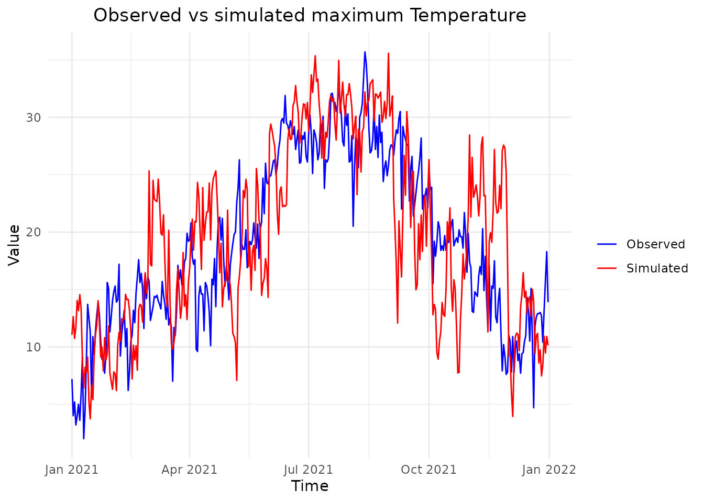
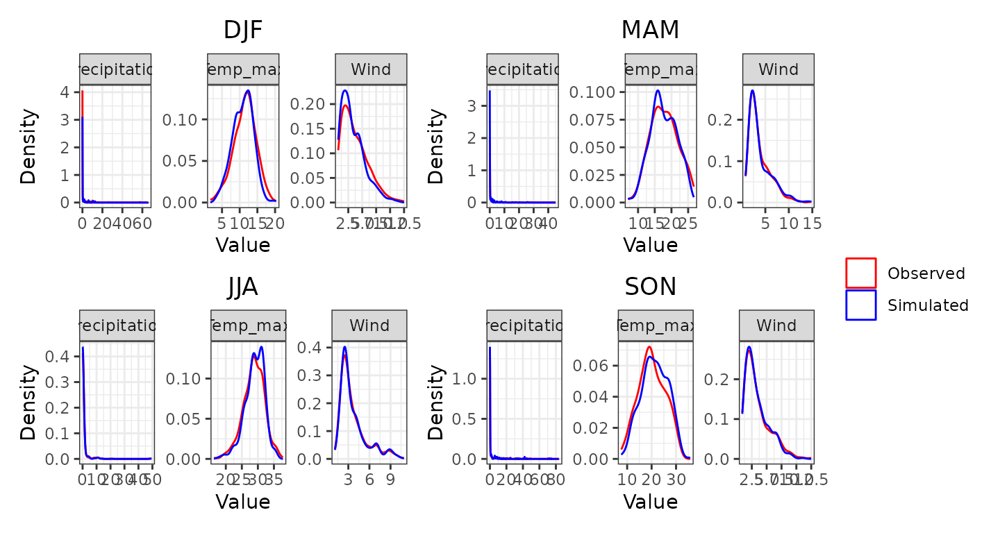
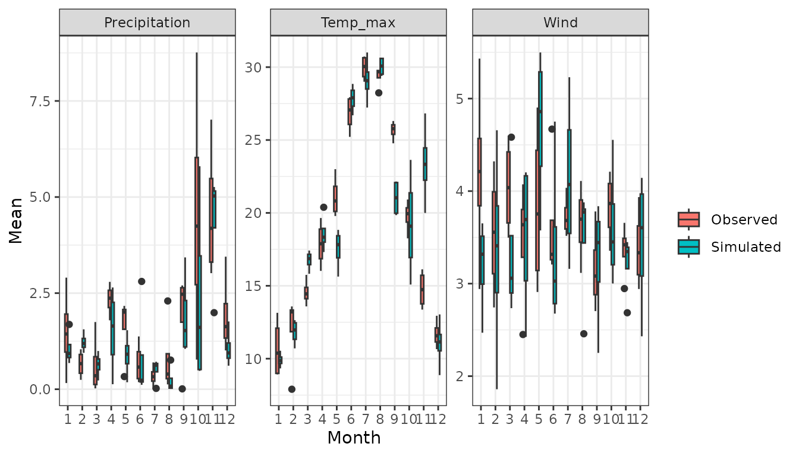
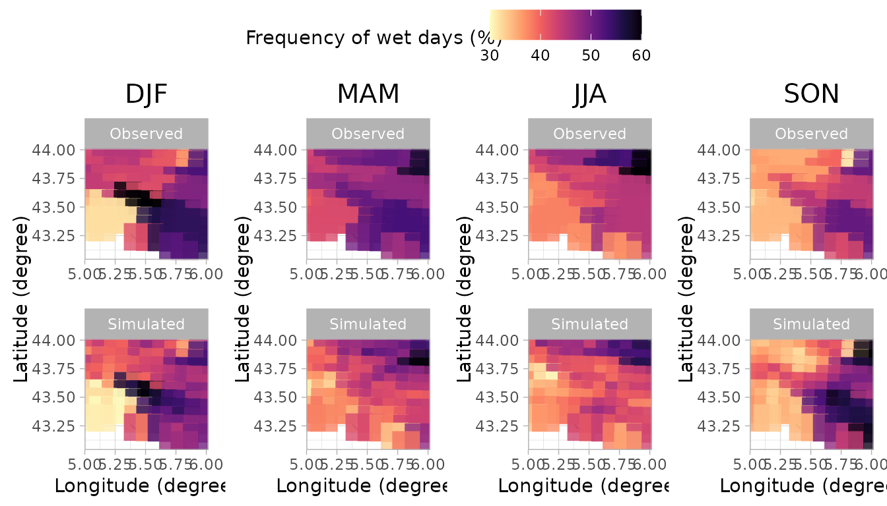
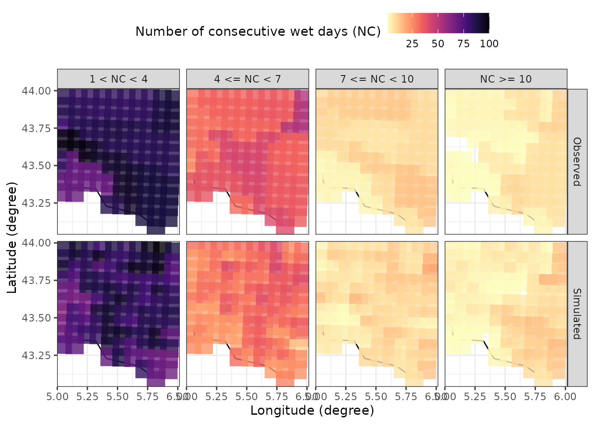

This vignette provides a step-by-step guide on running a stochastic
weather generator using the MSTWeatherGen package. From
loading the historical weather data and spatial coordinates, performing
parameter estimation, to running simulations and generating validation
plots. This guide covers all you need to get started with
MSTWeatherGen, but does not provide the technical details
of the methods considered.
For our simulation, we will need historical weather data of multiple variables and geographic coordinates. Below, we load these datasets stored within the package.
The data considered here is the meteorological dataset SAFRAN, developed by Météo-France (strating in 2011/01/01 and ending in 2021/12/31). We only consider a small region in the south of France for the period 2018-2021. We consider 3 variables: precipitation, wind, and maximum temperature.
data("data", package = "MSTWeatherGen")
data("coordinates", package = "MSTWeatherGen")
names = c("Precipitation", "Wind", "Temp_max")
real_dates = seq(as.Date("2011-01-01"),as.Date("2021-12-31"), by="day")
dates <- seq(as.Date("2018-01-01"),as.Date("2021-12-31"), by="day")
index_dates <- real_dates %in% dates
data <- data[index_dates,,]MSTWeatherGen
MSTWeatherGen is designed for multivariate and
spatio-temporal weather generation. Therefore, the meteorological data
to be used (here data) needs to be multiple variables (at
least two variables) defined in a spatial domain (characterized by
coordinates) and a temporal domain (defined by
dates). Thus, the data needs to be in three dimensions
(timelocationvariable).
Alongside the meteorological data, the user needs to provide a two
column matrix of coordinates of each locations considered. Each row
i of this matrix (coordinates[i,]) corresponds
to the x and y coordinates of the datum data[,i,]. Finally,
the user needs also to provide the time (dates here)
corresponding to each point in the first dimension of
data.
Another important point about the meteorological data is the
precipitation variable. Being a special variable in the estimation and
simulation (as it has many zeros), if it is considered, it has to be the
first variable in the meteorological data. If the user wants, one can
also provide the names of the variables considered (here
names).
With the data loaded, we proceed to estimate the parameters required
for simulation. This involves determining weather types, computing
transition probabilities between weather types, estimating the
transformation functions of the variables into normal distribution, and
finally estimating the parameters of the multivariate spatio-temporal
covariance function, all using the MSTWeatherGen_Estim
function.
Before heading to the estimation, we will detail some important
considerations that will help the user use the
MSTWeatherGen_Estim function. First, if the data exhibit
seasonality, it has to be handled somehow. Here, propose to treat each
season separately meaning that the parameters of the model (weather
types, transformation functions, and covariance function) are estimated
at each season. The seasons are up to the user to define using the
following format:
seasons <- list(
s1 = list(min_day = 1, max_day = 29, min_month = 12, max_month = 2),
s2 = list(min_day = 1, max_day = 31, min_month = 3, max_month = 5),
s3 = list(min_day = 1, max_day = 31, min_month = 6, max_month = 8),
s4 = list(min_day = 1, max_day = 30, min_month = 9, max_month = 11)
)We can also provide the names of each season, to be used later for the validation plots:
names_seasons = c("DJF", "MAM", "JJA", "SON")If the considered data does not exhibit seasonality one can use the
whole period to estimate the parameters. To do that, one needs to fix
the argument by_season of the
MSTWeatherGen_Estim as False.
All the data being ready, we can now proceed to the estimation of the
parameters using MSTWeatherGen_Estim function.
#> ---Final iteration--- 19
#> --Singular Value-- 2292.205 -- Local Percent -- 76.49359 %
#> ---Final iteration--- 46
#> --Singular Value-- 398.8896 -- Local Percent -- 44.07209 %
#> ---Final iteration--- 1
#> --Singular Value-- 129.4401 -- Local Percent -- 47.51711 %
#>
#> -----Execution Time----- 2.975
#> Nelder-Mead direct search function minimizer
#> function value for initial parameters = 350.636352
#> Scaled convergence tolerance is 5.22489e-06
#> Stepsize computed as 0.100000
#> Nelder-Mead direct search function minimizer
#> BUILD 3 350.637165 350.636032
#> function value for initial parameters = 473.732066
#> Scaled convergence tolerance is 7.05916e-06
#> Stepsize computed as 0.100000
#> EXTENSION 5 350.636352 350.622986
#> BUILD 3 473.732868 473.731749
#> EXTENSION 7 350.636032 350.575177
#> EXTENSION 5 473.732066 473.718838
#> EXTENSION 9 350.622986 343.041373
#> EXTENSION 7 473.731749 473.671323
#> REFLECTION 11 350.575177 325.588458
#> HI-REDUCTION 13 349.650381 325.588458
#> EXTENSION 9 473.718838 466.193011
#> HI-REDUCTION 15 346.941358 325.588458
#> REFLECTION 11 473.671323 451.371894
#> REFLECTION 17 343.041373 289.126744
#> HI-REDUCTION 13 472.738683 451.371894
#> HI-REDUCTION 19 334.023170 289.126744
#> HI-REDUCTION 15 470.015131 451.371894
#> REFLECTION 17 466.193011 435.163936
#> LO-REDUCTION 21 325.588458 289.126744
#> HI-REDUCTION 19 458.055445 435.163936
#> HI-REDUCTION 23 307.217576 289.126744
#> HI-REDUCTION 21 451.371894 435.163936
#> HI-REDUCTION 25 293.079023 289.126744
#> REFLECTION 23 451.241653 434.508697
#> HI-REDUCTION 27 289.877470 285.489693
#> HI-REDUCTION 25 441.477823 434.508697
#> HI-REDUCTION 29 289.126744 279.434431
#> HI-REDUCTION 27 436.292045 434.508697
#> LO-REDUCTION 31 285.489693 279.434431
#> HI-REDUCTION 29 435.163936 434.508697
#> LO-REDUCTION 33 279.677204 279.434431
#> REFLECTION 31 434.623994 433.789574
#> LO-REDUCTION 35 279.646027 279.232941
#> LO-REDUCTION 33 434.508697 433.672249
#> HI-REDUCTION 37 279.434431 279.214823
#> REFLECTION 35 433.789574 433.535970
#> HI-REDUCTION 39 279.232941 279.129767
#> EXTENSION 37 433.672249 432.862381
#> LO-REDUCTION 41 279.214823 279.129767
#> REFLECTION 39 433.535970 432.606666
#> HI-REDUCTION 43 279.155090 279.129767
#> REFLECTION 41 432.862381 431.988677
#> EXTENSION 45 279.140591 279.082282
#> REFLECTION 43 432.606666 431.610025
#> EXTENSION 47 279.129767 279.058748
#> REFLECTION 45 431.988677 431.040973
#> EXTENSION 49 279.082282 278.904185
#> REFLECTION 47 431.610025 430.538577
#> EXTENSION 51 279.058748 278.879892
#> REFLECTION 49 431.040973 430.007301
#> EXTENSION 53 278.904185 278.385194
#> REFLECTION 51 430.538577 429.384172
#> LO-REDUCTION 55 278.879892 278.385194
#> REFLECTION 53 430.007301 428.873650
#> EXTENSION 57 278.499459 277.363183
#> REFLECTION 55 429.384172 428.138070
#> LO-REDUCTION 59 278.385194 277.363183
#> REFLECTION 57 428.873650 427.623726
#> EXTENSION 61 277.716105 275.466972
#> REFLECTION 59 428.138070 426.791128
#> EXTENSION 63 277.363183 273.695785
#> REFLECTION 61 427.623726 426.238773
#> EXTENSION 65 275.466972 266.383523
#> REFLECTION 63 426.791128 425.334137
#> LO-REDUCTION 67 273.695785 266.383523
#> REFLECTION 65 426.238773 424.697501
#> REFLECTION 67 425.334137 423.758371
#> HI-REDUCTION 69 270.469048 266.383523
#> REFLECTION 69 424.697501 422.976200
#> LO-REDUCTION 71 268.749246 266.383523
#> REFLECTION 71 423.758371 422.056463
#> EXTENSION 73 266.825064 263.225570
#> REFLECTION 73 422.976200 421.049200
#> LO-REDUCTION 75 266.383523 263.225570
#> REFLECTION 75 422.056463 420.223721
#> HI-REDUCTION 77 264.625339 263.225570
#> LO-REDUCTION 79 263.928717 263.225570
#> REFLECTION 77 421.049200 418.889850
#> LO-REDUCTION 81 263.244060 263.225570
#> REFLECTION 79 420.223721 418.260100
#> HI-REDUCTION 83 263.228178 263.170332
#> REFLECTION 81 418.889850 416.472315
#> HI-REDUCTION 85 263.225570 263.170332
#> REFLECTION 83 418.260100 416.173060
#> HI-REDUCTION 87 263.181129 263.170332
#> REFLECTION 85 416.472315 413.774561
#> LO-REDUCTION 89 263.173391 263.166804
#> LO-REDUCTION 87 416.173060 413.665328
#> HI-REDUCTION 91 263.170332 263.164765
#> LO-REDUCTION 89 413.774561 412.520836
#> HI-REDUCTION 93 263.166804 263.164765
#> LO-REDUCTION 91 413.665328 412.520836
#> LO-REDUCTION 95 263.165062 263.164094
#> LO-REDUCTION 93 412.603523 411.983408
#> HI-REDUCTION 97 263.164765 263.164012
#> HI-REDUCTION 95 412.520836 411.983408
#> HI-REDUCTION 99 263.164094 263.164011
#> REFLECTION 97 412.040185 411.787631
#> Exiting from Nelder Mead minimizer
#> 101 function evaluations used
#> Nelder-Mead direct search function minimizer
#> function value for initial parameters = 476.306068
#> Scaled convergence tolerance is 7.09751e-06
#> Stepsize computed as 0.100000
#> EXTENSION 99 411.983408 411.375903
#> BUILD 3 476.307717 476.305417
#> Exiting from Nelder Mead minimizer
#> 101 function evaluations used
#> EXTENSION 5 476.306068 476.279015
#> EXTENSION 7 476.305417 476.182689
#> EXTENSION 9 476.279015 462.455438
#> REFLECTION 11 476.182689 431.682582
#> HI-REDUCTION 13 474.373855 431.682582
#> HI-REDUCTION 15 469.346562 431.682582
#> REFLECTION 17 462.455438 348.145994
#> HI-REDUCTION 19 446.810038 348.145994
#> REFLECTION 21 431.682582 246.636874
#> HI-REDUCTION 23 394.795166 246.636874
#> LO-REDUCTION 25 348.145994 222.865074
#> HI-REDUCTION 27 299.417603 222.865074
#> REFLECTION 29 246.636874 206.411024
#> HI-REDUCTION 31 222.865074 206.411024
#> LO-REDUCTION 33 221.042564 197.525560
#> HI-REDUCTION 35 206.411024 197.525560
#> HI-REDUCTION 37 201.815861 197.525560
#> HI-REDUCTION 39 197.806690 197.525560
#> HI-REDUCTION 41 197.804208 197.121831
#> LO-REDUCTION 43 197.525560 197.121831
#> HI-REDUCTION 45 197.261284 197.121831
#> REFLECTION 47 197.255319 197.118444
#> EXTENSION 49 197.121831 196.911653
#> EXTENSION 51 197.118444 196.676276
#> EXTENSION 53 196.911653 196.429537
#> EXTENSION 55 196.676276 195.389247
#> LO-REDUCTION 57 196.429537 195.389247
#> EXTENSION 59 195.587206 192.965974
#> LO-REDUCTION 61 195.389247 192.965974
#> EXTENSION 63 193.500038 187.066372
#> LO-REDUCTION 65 192.965974 187.066372
#> EXTENSION 67 187.423526 173.598517
#> EXTENSION 69 187.066372 159.481520
#> HI-REDUCTION 71 176.718773 159.481520
#> HI-REDUCTION 73 173.598517 159.481520
#> EXTENSION 75 170.988088 156.463458
#> REFLECTION 77 159.481520 154.861859
#> HI-REDUCTION 79 156.463458 150.867727
#> REFLECTION 81 154.861859 139.992398
#> HI-REDUCTION 83 150.867727 139.992398
#> HI-REDUCTION 85 145.184866 139.992398
#> HI-REDUCTION 87 143.022460 139.992398
#> LO-REDUCTION 89 142.717430 139.992398
#> REFLECTION 91 141.559818 139.770526
#> HI-REDUCTION 93 140.659814 139.770526
#> REFLECTION 95 139.992398 139.449215
#> HI-REDUCTION 97 139.770526 139.449215
#> LO-REDUCTION 99 139.637951 139.401415
#> Exiting from Nelder Mead minimizer
#> 101 function evaluations used
#> Nelder-Mead direct search function minimizer
#> function value for initial parameters = 2.297042
#> Scaled convergence tolerance is 3.42286e-08
#> Stepsize computed as 0.100000
#> Nelder-Mead direct search function minimizer
#> Exiting from Nelder Mead minimizer
#> 3 function evaluations used
#> Nelder-Mead direct search function minimizer
#> function value for initial parameters = 993.165684
#> Scaled convergence tolerance is 1.47993e-05
#> Stepsize computed as 0.100000
#> function value for initial parameters = 986.409538
#> Scaled convergence tolerance is 1.46986e-05
#> Stepsize computed as 0.100000
#> BUILD 3 993.234483 993.136830
#> BUILD 3 986.477008 986.381242
#> EXTENSION 5 993.165684 992.541784
#> EXTENSION 5 986.409538 985.797783
#> EXTENSION 7 986.381242 984.443558
#> EXTENSION 7 993.136830 991.160030
#> EXTENSION 9 985.797783 941.989631
#> EXTENSION 9 992.541784 946.184670
#> REFLECTION 11 984.443558 886.750271
#> REFLECTION 11 991.160030 881.112912
#> HI-REDUCTION 13 980.318467 881.112912
#> HI-REDUCTION 13 973.882340 886.750271
#> HI-REDUCTION 15 963.662315 881.112912
#> HI-REDUCTION 15 958.026055 886.750271
#> REFLECTION 17 941.989631 790.504791
#> REFLECTION 17 946.184670 735.083815
#> HI-REDUCTION 19 911.485240 790.504791
#> HI-REDUCTION 19 911.279891 735.083815
#> REFLECTION 21 886.750271 755.668974
#> REFLECTION 21 881.112912 557.829694
#> HI-REDUCTION 23 839.065959 755.668974
#> HI-REDUCTION 23 815.795123 557.829694
#> HI-REDUCTION 25 801.772030 755.668974
#> HI-REDUCTION 25 755.488419 557.829694
#> LO-REDUCTION 27 790.504791 746.632798
#> REFLECTION 27 735.083815 518.165641
#> HI-REDUCTION 29 759.610777 746.632798
#> HI-REDUCTION 29 648.950579 518.165641
#> HI-REDUCTION 31 755.668974 746.632798
#> LO-REDUCTION 31 557.829694 495.969280
#> LO-REDUCTION 33 749.712221 746.632798
#> LO-REDUCTION 33 518.165641 491.242034
#> LO-REDUCTION 35 748.837332 746.632798
#> HI-REDUCTION 35 502.234151 491.242034
#> HI-REDUCTION 37 747.160839 746.632798
#> LO-REDUCTION 37 495.969280 491.242034
#> HI-REDUCTION 39 747.020267 746.632798
#> LO-REDUCTION 39 493.026080 491.242034
#> EXTENSION 41 746.797637 745.913595
#> EXTENSION 41 492.099052 487.634826
#> EXTENSION 43 746.632798 745.710060
#> LO-REDUCTION 43 491.242034 487.634826
#> EXTENSION 45 745.913595 743.412041
#> EXTENSION 45 488.782762 480.679995
#> LO-REDUCTION 47 745.710060 743.412041
#> EXTENSION 47 487.634826 476.264970
#> EXTENSION 49 744.026691 738.359936
#> EXTENSION 49 480.679995 450.604980
#> LO-REDUCTION 51 743.412041 738.359936
#> EXTENSION 51 476.264970 423.588298
#> EXTENSION 53 739.152868 726.631236
#> EXTENSION 53 450.604980 277.636609
#> EXTENSION 55 738.359936 716.545040
#> HI-REDUCTION 55 423.588298 277.636609
#> LO-REDUCTION 57 408.018216 277.636609
#> EXTENSION 57 726.631236 686.276572
#> REFLECTION 59 716.545040 669.618503
#> LO-REDUCTION 59 324.991930 277.636609
#> HI-REDUCTION 61 689.272212 669.618503
#> REFLECTION 61 297.156857 222.496173
#> HI-REDUCTION 63 686.276572 669.618503
#> EXTENSION 63 277.636609 197.595953
#> HI-REDUCTION 65 240.500496 197.595953
#> REFLECTION 65 678.226645 659.059854
#> HI-REDUCTION 67 222.496173 197.595953
#> LO-REDUCTION 67 669.618503 657.508279
#> HI-REDUCTION 69 218.287797 197.595953
#> LO-REDUCTION 69 659.059854 655.473929
#> REFLECTION 71 202.953603 171.700631
#> LO-REDUCTION 71 657.508279 654.677123
#> HI-REDUCTION 73 197.595953 171.700631
#> HI-REDUCTION 73 655.473929 654.677123
#> EXTENSION 75 186.522768 131.572249
#> HI-REDUCTION 75 654.989850 654.360819
#> LO-REDUCTION 77 654.677123 654.247518
#> HI-REDUCTION 77 171.700631 131.572249
#> REFLECTION 79 171.422051 130.698910
#> HI-REDUCTION 79 654.360819 654.247518
#> HI-REDUCTION 81 159.041627 130.698910
#> HI-REDUCTION 83 149.283877 130.698910
#> HI-REDUCTION 81 654.292980 654.227651
#> HI-REDUCTION 85 141.761827 130.698910
#> HI-REDUCTION 83 654.247518 654.227651
#> REFLECTION 87 131.572249 120.426839
#> HI-REDUCTION 85 654.232201 654.219266
#> HI-REDUCTION 89 130.698910 120.426839
#> HI-REDUCTION 87 654.227651 654.217944
#> LO-REDUCTION 91 128.713961 120.426839
#> HI-REDUCTION 89 654.219266 654.215345
#> LO-REDUCTION 93 123.250044 120.426839
#> HI-REDUCTION 91 654.217944 654.215345
#> HI-REDUCTION 95 121.693343 120.426839
#> REFLECTION 93 654.215397 654.214839
#> LO-REDUCTION 97 121.140527 120.250392
#> HI-REDUCTION 95 654.215345 654.213896
#> REFLECTION 99 120.426839 119.953921
#> LO-REDUCTION 97 654.214839 654.213896
#> Exiting from Nelder Mead minimizer
#> 101 function evaluations used
#> LO-REDUCTION 99 654.214060 654.213896
#> Exiting from Nelder Mead minimizer
#> 101 function evaluations used
#> Nelder-Mead direct search function minimizer
#> function value for initial parameters = 286.214778
#> Scaled convergence tolerance is 4.26493e-06
#> Stepsize computed as 0.100000
#> Exiting from Nelder Mead minimizer
#> 3 function evaluations used
#> Nelder-Mead direct search function minimizer
#> Nelder-Mead direct search function minimizer
#> function value for initial parameters = 299.564497
#> Scaled convergence tolerance is 4.46386e-06
#> Stepsize computed as 0.100000
#> function value for initial parameters = 300.059745
#> Scaled convergence tolerance is 4.47124e-06
#> Stepsize computed as 0.100000
#> Exiting from Nelder Mead minimizer
#> 3 function evaluations used
#> Exiting from Nelder Mead minimizer
#> 3 function evaluations used
#> Nelder-Mead direct search function minimizer
#> function value for initial parameters = 217.823669
#> Scaled convergence tolerance is 3.24583e-06
#> Stepsize computed as 0.100000
#> BUILD 3 217.845222 217.814636
#> Nelder-Mead direct search function minimizer
#> function value for initial parameters = 581.197186
#> Scaled convergence tolerance is 8.66051e-06
#> Stepsize computed as 0.100000
#> EXTENSION 5 217.823669 217.626577
#> BUILD 3 581.238754 581.179766
#> EXTENSION 7 217.814636 217.184524
#> EXTENSION 5 581.197186 580.817313
#> EXTENSION 9 217.626577 199.921507
#> REFLECTION 11 217.184524 173.105544
#> EXTENSION 7 581.179766 579.967297
#> HI-REDUCTION 13 213.492813 173.105544
#> HI-REDUCTION 15 207.134479 173.105544
#> EXTENSION 9 580.817313 547.123414
#> REFLECTION 17 199.921507 132.333869
#> REFLECTION 11 579.967297 494.408390
#> HI-REDUCTION 19 185.249452 132.333869
#> HI-REDUCTION 13 572.936502 494.408390
#> REFLECTION 21 173.105544 119.376807
#> HI-REDUCTION 15 560.913841 494.408390
#> HI-REDUCTION 23 151.288470 119.376807
#> REFLECTION 17 547.123414 398.026523
#> HI-REDUCTION 19 518.646487 398.026523
#> HI-REDUCTION 25 136.164289 119.376807
#> REFLECTION 21 494.408390 326.092722
#> LO-REDUCTION 27 132.333869 116.864900
#> HI-REDUCTION 23 446.838802 326.092722
#> HI-REDUCTION 25 409.132256 326.092722
#> HI-REDUCTION 29 121.091274 116.864900
#> HI-REDUCTION 31 119.376807 116.864900
#> REFLECTION 27 398.026523 326.012099
#> HI-REDUCTION 33 117.378582 116.864900
#> HI-REDUCTION 29 355.269601 326.012099
#> HI-REDUCTION 35 117.127704 116.819154
#> HI-REDUCTION 31 334.941313 326.012099
#> LO-REDUCTION 37 116.864900 116.819154
#> HI-REDUCTION 33 327.510702 326.012099
#> HI-REDUCTION 39 116.863037 116.792940
#> HI-REDUCTION 35 326.092722 325.210741
#> REFLECTION 41 116.819154 116.773811
#> HI-REDUCTION 37 326.012099 324.712223
#> HI-REDUCTION 43 116.792940 116.773811
#> HI-REDUCTION 39 325.210741 324.266265
#> EXTENSION 45 116.786873 116.745032
#> LO-REDUCTION 41 324.712223 324.266265
#> HI-REDUCTION 43 324.345332 324.266265
#> EXTENSION 47 116.773811 116.735533
#> REFLECTION 45 324.344656 324.260089
#> EXTENSION 49 116.745032 116.646135
#> REFLECTION 47 324.266265 324.186566
#> LO-REDUCTION 51 116.735533 116.646135
#> EXTENSION 53 116.674429 116.545980
#> REFLECTION 49 324.260089 324.175026
#> REFLECTION 51 324.186566 324.106218
#> LO-REDUCTION 55 116.646135 116.545980
#> REFLECTION 57 116.575135 116.529087
#> REFLECTION 53 324.175026 324.089457
#> REFLECTION 55 324.106218 324.025205
#> EXTENSION 59 116.545980 116.447077
#> REFLECTION 57 324.089457 324.003370
#> LO-REDUCTION 61 116.529087 116.447077
#> REFLECTION 59 324.025205 323.943511
#> EXTENSION 63 116.474714 116.369289
#> REFLECTION 61 324.003370 323.916756
#> LO-REDUCTION 65 116.447077 116.369289
#> REFLECTION 63 323.943511 323.861118
#> EXTENSION 67 116.390287 116.329724
#> REFLECTION 65 323.916756 323.829604
#> EXTENSION 69 116.369289 116.301733
#> REFLECTION 67 323.861118 323.778010
#> REFLECTION 69 323.829604 323.741907
#> LO-REDUCTION 71 116.329724 116.301733
#> REFLECTION 71 323.778010 323.694170
#> LO-REDUCTION 73 116.307591 116.301733
#> REFLECTION 73 323.741907 323.653653
#> LO-REDUCTION 75 116.304182 116.301733
#> REFLECTION 75 323.694170 323.609582
#> LO-REDUCTION 77 116.302950 116.301733
#> REFLECTION 77 323.653653 323.564834
#> REFLECTION 79 323.609582 323.524230
#> HI-REDUCTION 79 116.301964 116.301699
#> REFLECTION 81 323.564834 323.475441
#> REFLECTION 81 116.301733 116.301661
#> REFLECTION 83 323.524230 323.438098
#> HI-REDUCTION 83 116.301699 116.301474
#> REFLECTION 85 323.475441 323.385466
#> HI-REDUCTION 85 116.301661 116.301474
#> REFLECTION 87 323.438098 323.351169
#> LO-REDUCTION 87 116.301484 116.301474
#> REFLECTION 89 323.385466 323.294901
#> REFLECTION 91 323.351169 323.263427
#> HI-REDUCTION 89 116.301478 116.301451
#> REFLECTION 93 323.294901 323.203738
#> HI-REDUCTION 91 116.301474 116.301451
#> REFLECTION 95 323.263427 323.174857
#> Exiting from Nelder Mead minimizer
#> 93 function evaluations used
#> REFLECTION 97 323.203738 323.111971
#> Nelder-Mead direct search function minimizer
#> function value for initial parameters = 598.009313
#> Scaled convergence tolerance is 8.91103e-06
#> Stepsize computed as 0.100000
#> REFLECTION 99 323.174857 323.085444
#> BUILD 3 598.051976 597.991435
#> Exiting from Nelder Mead minimizer
#> 101 function evaluations used
#> EXTENSION 5 598.009313 597.619364
#> EXTENSION 7 597.991435 596.746378
#> EXTENSION 9 597.619364 562.099654
#> REFLECTION 11 596.746378 503.818694
#> HI-REDUCTION 13 589.485121 503.818694
#> HI-REDUCTION 15 576.864062 503.818694
#> REFLECTION 17 562.099654 384.368429
#> HI-REDUCTION 19 530.985975 384.368429
#> REFLECTION 21 503.818694 252.098097
#> HI-REDUCTION 23 447.645885 252.098097
#> HI-REDUCTION 25 399.492192 252.098097
#> REFLECTION 27 384.368429 223.314510
#> HI-REDUCTION 29 319.945200 223.314510
#> REFLECTION 31 252.098097 217.086696
#> HI-REDUCTION 33 223.314510 217.086696
#> LO-REDUCTION 35 220.991317 199.522769
#> HI-REDUCTION 37 217.086696 199.522769
#> LO-REDUCTION 39 201.157720 199.522769
#> LO-REDUCTION 41 199.921985 197.746792
#> HI-REDUCTION 43 199.522769 197.248383
#> LO-REDUCTION 45 197.746792 197.189276
#> HI-REDUCTION 47 197.248383 197.128051
#> REFLECTION 49 197.189276 197.030073
#> HI-REDUCTION 51 197.128051 197.030073
#> REFLECTION 53 197.052204 196.975470
#> EXTENSION 55 197.030073 196.918216
#> EXTENSION 57 196.975470 196.737035
#> EXTENSION 59 196.918216 196.597914
#> EXTENSION 61 196.737035 196.000835
#> EXTENSION 63 196.597914 195.707249
#> EXTENSION 65 196.000835 193.655329
#> EXTENSION 67 195.707249 193.117549
#> EXTENSION 69 193.655329 184.606704
#> EXTENSION 71 193.117549 175.267667
#> REFLECTION 73 184.606704 160.824967
#> HI-REDUCTION 75 175.781770 160.824967
#> REFLECTION 77 175.267667 151.612784
#> HI-REDUCTION 79 162.892594 151.612784
#> LO-REDUCTION 81 160.824967 151.612784
#> LO-REDUCTION 83 156.347258 149.295028
#> HI-REDUCTION 85 152.425281 149.295028
#> LO-REDUCTION 87 151.612784 149.295028
#> REFLECTION 89 150.485497 148.801184
#> REFLECTION 91 149.295028 148.224370
#> HI-REDUCTION 93 148.801184 148.224370
#> HI-REDUCTION 95 148.622694 148.224370
#> REFLECTION 97 148.373382 148.161275
#> LO-REDUCTION 99 148.224370 148.159941
#> Exiting from Nelder Mead minimizer
#> 101 function evaluations used
#> Nelder-Mead direct search function minimizer
#> function value for initial parameters = 156.061118
#> Scaled convergence tolerance is 2.32549e-06
#> Stepsize computed as 0.100000
#> Exiting from Nelder Mead minimizer
#> 3 function evaluations used
#> Nelder-Mead direct search function minimizer
#> Nelder-Mead direct search function minimizer
#> function value for initial parameters = 805.370540
#> Scaled convergence tolerance is 1.2001e-05
#> Stepsize computed as 0.100000
#> function value for initial parameters = 782.953532
#> Scaled convergence tolerance is 1.16669e-05
#> Stepsize computed as 0.100000
#> Exiting from Nelder Mead minimizer
#> 3 function evaluations used
#> Exiting from Nelder Mead minimizer
#> 3 function evaluations used
#> ---Final iteration--- 16
#> --Singular Value-- 3606.359 -- Local Percent -- 89.14083 %
#> ---Final iteration--- 170
#> --Singular Value-- 296.2719 -- Local Percent -- 29.65761 %
#> ---Final iteration--- 2
#> --Singular Value-- 120.137 -- Local Percent -- 49.4953 %
#>
#>
#> ++ Last 3-modes vs < 0.1 % stopping this level and under ++
#>
#> -----Execution Time----- 3.378
#> Nelder-Mead direct search function minimizer
#> function value for initial parameters = 423.385686
#> Scaled convergence tolerance is 6.30894e-06
#> Stepsize computed as 0.100000
#> BUILD 3 423.385700 423.385681
#> Nelder-Mead direct search function minimizer
#> EXTENSION 5 423.385686 423.385169
#> function value for initial parameters = 443.481591
#> Scaled convergence tolerance is 6.60839e-06
#> Stepsize computed as 0.100000
#> EXTENSION 7 423.385681 423.381854
#> BUILD 3 443.481610 443.481584
#> EXTENSION 9 423.385169 420.333686
#> EXTENSION 5 443.481591 443.480871
#> REFLECTION 11 423.381854 408.043513
#> HI-REDUCTION 13 423.198978 408.043513
#> EXTENSION 7 443.481584 443.476258
#> HI-REDUCTION 15 422.239016 408.043513
#> REFLECTION 17 420.333686 366.407533
#> EXTENSION 9 443.480871 439.275250
#> HI-REDUCTION 19 414.630673 366.407533
#> REFLECTION 11 443.476258 422.815969
#> REFLECTION 21 408.043513 333.241411
#> HI-REDUCTION 13 443.221871 422.815969
#> HI-REDUCTION 23 389.921644 333.241411
#> HI-REDUCTION 15 441.891189 422.815969
#> REFLECTION 17 439.275250 365.295950
#> HI-REDUCTION 25 372.245408 333.241411
#> HI-REDUCTION 19 431.587107 365.295950
#> REFLECTION 21 422.815969 295.831546
#> LO-REDUCTION 27 366.407533 333.241411
#> HI-REDUCTION 23 398.525519 295.831546
#> HI-REDUCTION 29 348.500816 333.241411
#> HI-REDUCTION 25 373.794400 295.831546
#> HI-REDUCTION 31 339.774925 333.241411
#> REFLECTION 27 365.295950 283.302978
#> LO-REDUCTION 33 335.195872 333.223630
#> HI-REDUCTION 29 330.464641 283.302978
#> HI-REDUCTION 35 333.611861 333.223630
#> LO-REDUCTION 31 295.831546 279.040935
#> HI-REDUCTION 37 333.241411 333.223630
#> HI-REDUCTION 33 286.358580 279.040935
#> EXTENSION 39 333.231814 332.917812
#> LO-REDUCTION 35 283.302978 278.701796
#> HI-REDUCTION 41 333.223630 332.917812
#> HI-REDUCTION 37 279.867427 278.701796
#> LO-REDUCTION 43 333.079981 332.917812
#> HI-REDUCTION 39 279.040935 278.701796
#> EXTENSION 45 332.930951 332.504445
#> HI-REDUCTION 41 278.985043 278.701796
#> LO-REDUCTION 47 332.917812 332.504445
#> HI-REDUCTION 43 278.835481 278.701796
#> EXTENSION 49 332.583755 331.646737
#> EXTENSION 45 278.813232 278.674507
#> LO-REDUCTION 51 332.504445 331.646737
#> EXTENSION 47 278.701796 278.314745
#> LO-REDUCTION 49 278.674507 278.314745
#> EXTENSION 51 278.384949 277.571915
#> EXTENSION 53 331.834548 330.173929
#> EXTENSION 55 331.646737 328.560075
#> REFLECTION 57 330.173929 327.890564
#> EXTENSION 59 328.560075 325.398893
#> HI-REDUCTION 61 327.890564 325.398893
#> LO-REDUCTION 53 278.314745 277.571915
#> EXTENSION 63 326.792859 320.878529
#> EXTENSION 55 277.836257 276.310582
#> HI-REDUCTION 65 325.398893 320.878529
#> EXTENSION 57 277.571915 274.986524
#> LO-REDUCTION 67 324.270704 320.878529
#> EXTENSION 69 321.053687 315.915308
#> EXTENSION 59 276.310582 269.855486
#> HI-REDUCTION 71 320.878529 315.915308
#> REFLECTION 61 274.986524 269.496914
#> HI-REDUCTION 73 318.720766 315.915308
#> LO-REDUCTION 75 318.463014 315.915308
#> REFLECTION 63 269.855486 266.550063
#> HI-REDUCTION 77 317.491768 315.915308
#> HI-REDUCTION 65 269.496914 266.550063
#> LO-REDUCTION 79 317.088812 315.915308
#> REFLECTION 67 267.815670 263.661533
#> HI-REDUCTION 81 316.430854 315.915308
#> HI-REDUCTION 69 266.550063 263.661533
#> REFLECTION 83 316.119979 315.811221
#> HI-REDUCTION 85 315.915308 315.811221
#> LO-REDUCTION 71 265.513266 263.661533
#> LO-REDUCTION 87 315.856095 315.787454
#> EXTENSION 73 263.679852 259.637866
#> HI-REDUCTION 89 315.811221 315.775004
#> HI-REDUCTION 75 263.661533 259.637866
#> HI-REDUCTION 91 315.787454 315.761811
#> EXTENSION 77 262.075725 258.266933
#> LO-REDUCTION 93 315.775004 315.757999
#> LO-REDUCTION 79 259.637866 256.601176
#> HI-REDUCTION 95 315.761811 315.757999
#> HI-REDUCTION 81 258.266933 256.601176
#> HI-REDUCTION 97 315.760921 315.756688
#> HI-REDUCTION 83 257.543632 256.601176
#> LO-REDUCTION 99 315.757999 315.755955
#> HI-REDUCTION 85 257.256133 256.601176
#> Exiting from Nelder Mead minimizer
#> 101 function evaluations used
#> Nelder-Mead direct search function minimizer
#> REFLECTION 87 257.021309 256.547992
#> function value for initial parameters = 413.675536
#> Scaled convergence tolerance is 6.16425e-06
#> Stepsize computed as 0.100000
#> REFLECTION 89 256.601176 256.373831
#> LO-REDUCTION 91 256.547992 256.342981
#> HI-REDUCTION 93 256.373831 256.342981
#> HI-REDUCTION 95 256.366462 256.290098
#> REFLECTION 97 256.342981 256.284662
#> BUILD 3 413.675556 413.675528
#> HI-REDUCTION 99 256.295962 256.284662
#> EXTENSION 5 413.675536 413.674741
#> EXTENSION 7 413.675528 413.669650
#> EXTENSION 9 413.674741 409.041224
#> REFLECTION 11 413.669650 390.633965
#> HI-REDUCTION 13 413.389019 390.633965
#> HI-REDUCTION 15 411.922283 390.633965
#> REFLECTION 17 409.041224 320.213993
#> HI-REDUCTION 19 400.525595 320.213993
#> Exiting from Nelder Mead minimizer
#> 101 function evaluations used
#> REFLECTION 21 390.633965 209.635902
#> HI-REDUCTION 23 362.087960 209.635902
#> REFLECTION 25 320.213993 75.052739
#> HI-REDUCTION 27 250.631069 75.052739
#> HI-REDUCTION 29 209.635902 75.052739
#> LO-REDUCTION 31 196.399037 66.925518
#> HI-REDUCTION 33 124.351534 66.925518
#> HI-REDUCTION 35 84.786997 66.925518
#> HI-REDUCTION 37 75.052739 66.925518
#> HI-REDUCTION 39 68.690456 62.039749
#> LO-REDUCTION 41 66.925518 61.992055
#> HI-REDUCTION 43 63.381952 61.992055
#> HI-REDUCTION 45 62.360584 61.992055
#> LO-REDUCTION 47 62.042271 61.992055
#> HI-REDUCTION 49 62.039749 61.980428
#> LO-REDUCTION 51 61.992055 61.956344
#> LO-REDUCTION 53 61.980428 61.954325
#> LO-REDUCTION 55 61.956344 61.941291
#> HI-REDUCTION 57 61.954325 61.940051
#> HI-REDUCTION 59 61.941291 61.936719
#> HI-REDUCTION 61 61.940051 61.936719
#> REFLECTION 63 61.937449 61.934782
#> HI-REDUCTION 65 61.936719 61.934782
#> EXTENSION 67 61.934865 61.931525
#> EXTENSION 69 61.934782 61.928556
#> EXTENSION 71 61.931525 61.922821
#> EXTENSION 73 61.928556 61.909875
#> EXTENSION 75 61.922821 61.902196
#> EXTENSION 77 61.909875 61.858901
#> LO-REDUCTION 79 61.902196 61.858901
#> EXTENSION 81 61.865894 61.769367
#> LO-REDUCTION 83 61.858901 61.769367
#> EXTENSION 85 61.787504 61.603957
#> EXTENSION 87 61.769367 61.508389
#> EXTENSION 89 61.603957 61.073008
#> EXTENSION 91 61.508389 60.779568
#> EXTENSION 93 61.073008 59.551148
#> LO-REDUCTION 95 60.779568 59.551148
#> EXTENSION 97 59.573584 57.356243
#> EXTENSION 99 59.551148 55.187776
#> Exiting from Nelder Mead minimizer
#> 101 function evaluations used
#> Nelder-Mead direct search function minimizer
#> function value for initial parameters = 360.791893
#> Scaled convergence tolerance is 5.37622e-06
#> Stepsize computed as 0.100000
#> BUILD 3 360.793449 360.791280
#> Nelder-Mead direct search function minimizer
#> EXTENSION 5 360.791893 360.766294
#> function value for initial parameters = 593.842561
#> Scaled convergence tolerance is 8.84894e-06
#> Stepsize computed as 0.100000
#> EXTENSION 7 360.791280 360.674817
#> BUILD 3 593.844941 593.841623
#> EXTENSION 9 360.766294 347.582186
#> EXTENSION 5 593.842561 593.803184
#> REFLECTION 11 360.674817 318.726952
#> HI-REDUCTION 13 358.951482 318.726952
#> EXTENSION 7 593.841623 593.661458
#> HI-REDUCTION 15 354.172168 318.726952
#> REFLECTION 17 347.582186 270.752314
#> EXTENSION 9 593.803184 570.864162
#> HI-REDUCTION 19 332.523943 270.752314
#> REFLECTION 11 593.661458 512.380306
#> HI-REDUCTION 13 590.902971 512.380306
#> LO-REDUCTION 21 318.726952 270.752314
#> HI-REDUCTION 15 582.825445 512.380306
#> REFLECTION 17 570.864162 384.250021
#> HI-REDUCTION 23 298.241448 270.752314
#> HI-REDUCTION 19 541.316834 384.250021
#> REFLECTION 21 512.380306 287.680445
#> HI-REDUCTION 25 284.880151 270.752314
#> HI-REDUCTION 23 449.312615 287.680445
#> REFLECTION 27 271.409225 265.221389
#> HI-REDUCTION 25 398.907854 287.680445
#> LO-REDUCTION 29 270.752314 264.815413
#> REFLECTION 27 384.250021 283.596268
#> HI-REDUCTION 31 266.282442 264.815413
#> HI-REDUCTION 29 328.614703 283.596268
#> HI-REDUCTION 33 265.221389 264.815413
#> HI-REDUCTION 31 301.420147 283.596268
#> HI-REDUCTION 35 265.025571 264.784360
#> HI-REDUCTION 33 290.500731 283.596268
#> HI-REDUCTION 37 264.827981 264.784360
#> LO-REDUCTION 35 287.680445 283.205232
#> HI-REDUCTION 39 264.815413 264.784087
#> HI-REDUCTION 37 284.014345 283.205232
#> REFLECTION 41 264.784360 264.749788
#> HI-REDUCTION 39 283.596268 283.205232
#> LO-REDUCTION 43 264.784087 264.745498
#> LO-REDUCTION 41 283.259260 283.205232
#> LO-REDUCTION 45 264.749788 264.734700
#> LO-REDUCTION 43 283.220682 283.172570
#> LO-REDUCTION 47 264.745498 264.731624
#> HI-REDUCTION 45 283.205232 283.151001
#> LO-REDUCTION 49 264.734700 264.727974
#> LO-REDUCTION 47 283.172570 283.151001
#> LO-REDUCTION 51 264.731624 264.726244
#> HI-REDUCTION 49 283.153392 283.151001
#> LO-REDUCTION 53 264.727974 264.724947
#> HI-REDUCTION 51 283.152416 283.150389
#> LO-REDUCTION 55 264.726244 264.724035
#> EXTENSION 53 283.151001 283.148599
#> LO-REDUCTION 57 264.724947 264.723566
#> HI-REDUCTION 55 283.150389 283.148599
#> EXTENSION 57 283.149364 283.145382
#> LO-REDUCTION 59 283.148599 283.145382
#> LO-REDUCTION 59 264.724035 264.723085
#> HI-REDUCTION 61 264.723566 264.722906
#> HI-REDUCTION 63 264.723085 264.722596
#> LO-REDUCTION 65 264.722906 264.722596
#> EXTENSION 61 283.146387 283.141152
#> HI-REDUCTION 67 264.722691 264.722596
#> LO-REDUCTION 63 283.145382 283.141152
#> EXTENSION 69 264.722663 264.722533
#> EXTENSION 71 264.722596 264.722300
#> EXTENSION 65 283.141338 283.137208
#> EXTENSION 73 264.722533 264.722180
#> EXTENSION 67 283.141152 283.135121
#> EXTENSION 75 264.722300 264.721420
#> LO-REDUCTION 69 283.137208 283.135121
#> EXTENSION 77 264.722180 264.721353
#> EXTENSION 79 264.721420 264.719022
#> LO-REDUCTION 71 283.136515 283.135121
#> REFLECTION 73 283.135440 283.134888
#> LO-REDUCTION 81 264.721353 264.719022
#> HI-REDUCTION 75 283.135121 283.134888
#> EXTENSION 83 264.719699 264.714732
#> REFLECTION 77 283.134975 283.134862
#> LO-REDUCTION 85 264.719022 264.714732
#> HI-REDUCTION 79 283.134888 283.134818
#> EXTENSION 87 264.715850 264.707707
#> EXTENSION 89 264.714732 264.702140
#> HI-REDUCTION 81 283.134862 283.134818
#> EXTENSION 91 264.707707 264.684975
#> Exiting from Nelder Mead minimizer
#> 83 function evaluations used
#> EXTENSION 93 264.702140 264.666359
#> EXTENSION 95 264.684975 264.622158
#> EXTENSION 97 264.666359 264.569451
#> EXTENSION 99 264.622158 264.457245
#> Exiting from Nelder Mead minimizer
#> 101 function evaluations used
#> Nelder-Mead direct search function minimizer
#> function value for initial parameters = 599.061737
#> Scaled convergence tolerance is 8.92672e-06
#> Stepsize computed as 0.100000
#> BUILD 3 599.064147 599.060787
#> EXTENSION 5 599.061737 599.021744
#> EXTENSION 7 599.060787 598.877262
#> EXTENSION 9 599.021744 574.052421
#> REFLECTION 11 598.877262 503.981859
#> HI-REDUCTION 13 596.013783 503.981859
#> HI-REDUCTION 15 587.364693 503.981859
#> REFLECTION 17 574.052421 325.413431
#> HI-REDUCTION 19 539.505610 325.413431
#> REFLECTION 21 503.981859 109.194523
#> HI-REDUCTION 23 421.063558 109.194523
#> REFLECTION 25 325.413431 -251.387302
#> HI-REDUCTION 27 187.386069 -251.387302
#> HI-REDUCTION 29 109.194523 -251.387302
#> LO-REDUCTION 31 85.486010 -251.387302
#> HI-REDUCTION 33 -79.583021 -251.387302
#> HI-REDUCTION 35 -183.440601 -251.387302
#> HI-REDUCTION 37 -232.145847 -251.387302
#> HI-REDUCTION 39 -242.598739 -251.387302
#> HI-REDUCTION 41 -249.646995 -255.785594
#> LO-REDUCTION 43 -251.387302 -255.852520
#> HI-REDUCTION 45 -254.746965 -255.852520
#> HI-REDUCTION 47 -255.629929 -255.852520
#> HI-REDUCTION 49 -255.785594 -255.852520
#> HI-REDUCTION 51 -255.835929 -255.874878
#> LO-REDUCTION 53 -255.852520 -255.874878
#> HI-REDUCTION 55 -255.868109 -255.874878
#> EXTENSION 57 -255.871438 -255.880648
#> EXTENSION 59 -255.874878 -255.897004
#> EXTENSION 61 -255.880648 -255.903721
#> EXTENSION 63 -255.897004 -255.965243
#> LO-REDUCTION 65 -255.903721 -255.965243
#> EXTENSION 67 -255.955200 -256.088784
#> LO-REDUCTION 69 -255.965243 -256.088784
#> EXTENSION 71 -256.026027 -256.265256
#> EXTENSION 73 -256.088784 -256.388448
#> LO-REDUCTION 75 -256.265256 -256.447784
#> HI-REDUCTION 77 -256.377159 -256.447784
#> HI-REDUCTION 79 -256.388448 -256.447784
#> EXTENSION 81 -256.410832 -256.473019
#> EXTENSION 83 -256.447784 -256.554212
#> LO-REDUCTION 85 -256.473019 -256.554212
#> REFLECTION 87 -256.532971 -256.563531
#> HI-REDUCTION 89 -256.554212 -256.563531
#> REFLECTION 91 -256.560719 -256.572279
#> HI-REDUCTION 93 -256.563531 -256.572674
#> LO-REDUCTION 95 -256.572279 -256.573313
#> HI-REDUCTION 97 -256.572674 -256.574421
#> HI-REDUCTION 99 -256.573313 -256.574421
#> Exiting from Nelder Mead minimizer
#> 101 function evaluations used
#> Nelder-Mead direct search function minimizer
#> function value for initial parameters = 52.167867
#> Scaled convergence tolerance is 7.77362e-07
#> Stepsize computed as 0.100000
#> BUILD 3 52.167869 52.167866
#> Nelder-Mead direct search function minimizer
#> EXTENSION 5 52.167867 52.167776
#> function value for initial parameters = 988.820259
#> Scaled convergence tolerance is 1.47346e-05
#> Stepsize computed as 0.100000
#> EXTENSION 7 52.167866 52.167188
#> BUILD 3 988.820304 988.820243
#> EXTENSION 9 52.167776 51.474553
#> EXTENSION 5 988.820259 988.818535
#> REFLECTION 11 52.167188 48.547744
#> HI-REDUCTION 13 52.132130 48.547744
#> EXTENSION 7 988.820243 988.807335
#> HI-REDUCTION 15 51.926359 48.547744
#> REFLECTION 17 51.474553 40.386064
#> EXTENSION 9 988.818535 976.406684
#> HI-REDUCTION 19 50.076208 40.386064
#> REFLECTION 11 988.807335 927.140532
#> REFLECTION 21 48.547744 30.640968
#> HI-REDUCTION 13 988.147619 927.140532
#> HI-REDUCTION 23 44.833204 30.640968
#> HI-REDUCTION 15 984.375459 927.140532
#> REFLECTION 25 40.386064 18.142184
#> REFLECTION 17 976.406684 786.662019
#> HI-REDUCTION 27 34.025289 18.142184
#> HI-REDUCTION 19 952.723895 786.662019
#> REFLECTION 21 927.140532 635.910815
#> HI-REDUCTION 29 30.640968 18.142184
#> HI-REDUCTION 23 863.867663 635.910815
#> LO-REDUCTION 31 29.589720 18.142184
#> HI-REDUCTION 25 805.629076 635.910815
#> HI-REDUCTION 33 23.156889 18.142184
#> HI-REDUCTION 35 19.709168 18.142184
#> REFLECTION 27 786.662019 611.515691
#> HI-REDUCTION 37 19.473499 18.142184
#> HI-REDUCTION 29 709.734354 611.515691
#> HI-REDUCTION 39 18.404173 18.142184
#> LO-REDUCTION 31 635.910815 606.413517
#> HI-REDUCTION 41 18.248948 18.142184
#> HI-REDUCTION 33 617.063231 606.413517
#> HI-REDUCTION 43 18.169689 18.142184
#> LO-REDUCTION 35 611.515691 605.307324
#> HI-REDUCTION 45 18.145855 18.138139
#> HI-REDUCTION 37 606.413517 605.307324
#> HI-REDUCTION 47 18.142184 18.136861
#> EXTENSION 49 18.138139 18.124197
#> LO-REDUCTION 39 605.731324 605.262357
#> REFLECTION 51 18.136861 18.121106
#> LO-REDUCTION 41 605.307324 604.886362
#> EXTENSION 53 18.124197 18.108616
#> HI-REDUCTION 43 605.262357 604.806708
#> EXTENSION 55 18.121106 18.070288
#> HI-REDUCTION 45 604.886362 604.742861
#> LO-REDUCTION 57 18.108616 18.070288
#> HI-REDUCTION 47 604.806708 604.742861
#> REFLECTION 49 604.756160 604.725754
#> EXTENSION 59 18.077992 18.016127
#> LO-REDUCTION 61 18.070288 18.016127
#> HI-REDUCTION 51 604.742861 604.690971
#> REFLECTION 63 18.047926 18.010895
#> EXTENSION 53 604.725754 604.641321
#> EXTENSION 65 18.016127 17.916905
#> LO-REDUCTION 67 18.010895 17.916905
#> HI-REDUCTION 55 604.690971 604.641321
#> EXTENSION 69 17.928872 17.641397
#> EXTENSION 57 604.676757 604.578721
#> LO-REDUCTION 71 17.916905 17.641397
#> EXTENSION 73 17.676460 16.835463
#> EXTENSION 59 604.641321 604.518242
#> EXTENSION 75 17.641397 16.234038
#> EXTENSION 61 604.578721 604.306441
#> HI-REDUCTION 77 17.072917 16.234038
#> HI-REDUCTION 79 16.835463 16.234038
#> LO-REDUCTION 63 604.518242 604.306441
#> EXTENSION 81 16.738379 15.402721
#> EXTENSION 65 604.308179 603.815090
#> HI-REDUCTION 83 16.259908 15.402721
#> HI-REDUCTION 85 16.234038 15.402721
#> LO-REDUCTION 67 604.306441 603.815090
#> LO-REDUCTION 87 16.050861 15.402721
#> HI-REDUCTION 89 15.758994 15.402721
#> EXTENSION 69 603.911418 602.879960
#> HI-REDUCTION 91 15.578335 15.402721
#> EXTENSION 71 603.815090 602.248810
#> HI-REDUCTION 93 15.485515 15.402721
#> LO-REDUCTION 95 15.478834 15.402721
#> EXTENSION 73 602.879960 599.590826
#> HI-REDUCTION 97 15.424648 15.402721
#> EXTENSION 75 602.248810 596.168947
#> HI-REDUCTION 99 15.412580 15.402721
#> REFLECTION 77 599.590826 595.367020
#> Exiting from Nelder Mead minimizer
#> 101 function evaluations used
#> Nelder-Mead direct search function minimizer
#> LO-REDUCTION 79 596.168947 594.171647
#> function value for initial parameters = 994.741644
#> Scaled convergence tolerance is 1.48228e-05
#> Stepsize computed as 0.100000
#> HI-REDUCTION 81 595.367020 594.171647
#> BUILD 3 994.741693 994.741626
#> REFLECTION 83 594.736252 593.546486
#> EXTENSION 5 994.741644 994.739729
#> REFLECTION 85 594.171647 593.195402
#> EXTENSION 7 994.741626 994.727289
#> REFLECTION 87 593.546486 592.503984
#> EXTENSION 9 994.739729 980.856284
#> REFLECTION 89 593.195402 592.503582
#> REFLECTION 11 994.727289 923.195323
#> REFLECTION 91 592.503984 591.629335
#> HI-REDUCTION 13 993.994592 923.195323
#> HI-REDUCTION 15 989.795278 923.195323
#> LO-REDUCTION 93 592.503582 591.617712
#> REFLECTION 95 591.629335 591.614065
#> REFLECTION 97 591.617712 590.963982
#> REFLECTION 17 980.856284 733.192656
#> HI-REDUCTION 19 953.674252 733.192656
#> REFLECTION 21 923.195323 449.826073
#> HI-REDUCTION 23 842.445449 449.826073
#> REFLECTION 25 733.192656 -88.106791
#> HI-REDUCTION 99 591.614065 590.963982
#> HI-REDUCTION 27 555.834432 -88.106791
#> Exiting from Nelder Mead minimizer
#> 101 function evaluations used
#> HI-REDUCTION 29 449.826073 -88.106791
#> LO-REDUCTION 31 415.494740 -88.106791
#> HI-REDUCTION 33 177.254935 -88.106791
#> HI-REDUCTION 35 21.038529 -88.106791
#> HI-REDUCTION 37 -55.671697 -88.106791
#> HI-REDUCTION 39 -85.301780 -88.106791
#> HI-REDUCTION 41 -86.039492 -95.034680
#> HI-REDUCTION 43 -88.106791 -99.410990
#> LO-REDUCTION 45 -95.034680 -99.522384
#> HI-REDUCTION 47 -98.510696 -99.522384
#> HI-REDUCTION 49 -99.344318 -99.522384
#> HI-REDUCTION 51 -99.410990 -99.522384
#> EXTENSION 53 -99.501694 -99.815698
#> LO-REDUCTION 55 -99.522384 -99.815698
#> EXTENSION 57 -99.762854 -100.399885
#> LO-REDUCTION 59 -99.815698 -100.399885
#> EXTENSION 61 -100.162953 -101.230515
#> EXTENSION 63 -100.399885 -102.270476
#> EXTENSION 65 -101.230515 -104.545142
#> EXTENSION 67 -102.270476 -108.799367
#> REFLECTION 69 -104.545142 -110.289290
#> REFLECTION 71 -108.799367 -114.221504
#> LO-REDUCTION 73 -110.289290 -114.221504
#> LO-REDUCTION 75 -112.411340 -114.221504
#> EXTENSION 77 -113.890594 -118.114646
#> LO-REDUCTION 79 -114.221504 -118.114646
#> EXTENSION 81 -117.265069 -125.501675
#> EXTENSION 83 -118.114646 -127.426672
#> EXTENSION 85 -125.501675 -146.586539
#> HI-REDUCTION 87 -127.426672 -146.586539
#> EXTENSION 89 -132.795942 -163.874420
#> HI-REDUCTION 91 -144.979076 -163.874420
#> REFLECTION 93 -146.586539 -172.854985
#> HI-REDUCTION 95 -159.362949 -172.854985
#> HI-REDUCTION 97 -163.874420 -172.854985
#> LO-REDUCTION 99 -164.894455 -172.854985
#> Exiting from Nelder Mead minimizer
#> 101 function evaluations used
#> Nelder-Mead direct search function minimizer
#> function value for initial parameters = 64.480979
#> Scaled convergence tolerance is 9.60841e-07
#> Stepsize computed as 0.100000
#> BUILD 3 64.491707 64.476483
#> Nelder-Mead direct search function minimizer
#> EXTENSION 5 64.480979 64.383295
#> function value for initial parameters = 267.689324
#> Scaled convergence tolerance is 3.98888e-06
#> Stepsize computed as 0.100000
#> EXTENSION 7 64.476483 64.166680
#> BUILD 3 267.710836 267.680310
#> EXTENSION 9 64.383295 58.050392
#> REFLECTION 11 64.166680 50.399399
#> EXTENSION 5 267.689324 267.492526
#> HI-REDUCTION 13 62.506064 50.399399
#> HI-REDUCTION 15 60.192623 50.399399
#> EXTENSION 7 267.680310 267.050728
#> REFLECTION 17 58.050392 34.583112
#> HI-REDUCTION 19 53.988207 34.583112
#> EXTENSION 9 267.492526 248.517855
#> REFLECTION 21 50.399399 18.369352
#> REFLECTION 11 267.050728 214.571717
#> HI-REDUCTION 23 42.757113 18.369352
#> HI-REDUCTION 13 263.302177 214.571717
#> REFLECTION 25 34.583112 5.229270
#> HI-REDUCTION 15 256.577286 214.571717
#> HI-REDUCTION 27 23.875812 5.229270
#> REFLECTION 17 248.517855 142.759648
#> HI-REDUCTION 19 230.830824 142.759648
#> HI-REDUCTION 29 18.369352 5.229270
#> REFLECTION 21 214.571717 72.074064
#> HI-REDUCTION 23 179.932169 72.074064
#> LO-REDUCTION 31 16.825321 3.172990
#> HI-REDUCTION 33 8.605095 3.172990
#> HI-REDUCTION 25 151.344835 72.074064
#> HI-REDUCTION 35 5.229270 3.172990
#> REFLECTION 27 142.759648 57.868522
#> HI-REDUCTION 37 4.634477 2.977590
#> HI-REDUCTION 29 107.414720 57.868522
#> HI-REDUCTION 39 3.581785 2.977590
#> LO-REDUCTION 41 3.172990 2.977590
#> REFLECTION 31 72.074064 57.478238
#> HI-REDUCTION 43 3.008733 2.977590
#> HI-REDUCTION 33 57.868522 56.609345
#> HI-REDUCTION 45 3.001958 2.977590
#> HI-REDUCTION 35 57.478238 50.431195
#> HI-REDUCTION 47 2.979578 2.974678
#> HI-REDUCTION 37 56.609345 45.670749
#> EXTENSION 49 2.977590 2.962235
#> LO-REDUCTION 39 50.431195 45.532437
#> HI-REDUCTION 51 2.974678 2.962235
#> HI-REDUCTION 41 47.101451 45.532437
#> EXTENSION 53 2.967632 2.948461
#> LO-REDUCTION 43 45.805581 45.532437
#> EXTENSION 55 2.962235 2.926569
#> HI-REDUCTION 45 45.670749 45.532437
#> EXTENSION 57 2.948461 2.901728
#> EXTENSION 59 2.926569 2.836087
#> LO-REDUCTION 47 45.600513 45.532437
#> EXTENSION 61 2.901728 2.809323
#> EXTENSION 49 45.583174 45.437873
#> EXTENSION 63 2.836087 2.659725
#> LO-REDUCTION 51 45.532437 45.437873
#> LO-REDUCTION 65 2.809323 2.659725
#> EXTENSION 53 45.483122 45.314376
#> EXTENSION 67 2.684385 2.465946
#> EXTENSION 55 45.437873 45.149446
#> LO-REDUCTION 69 2.659725 2.465946
#> EXTENSION 57 45.314376 44.807771
#> REFLECTION 71 2.499674 2.406081
#> EXTENSION 59 45.149446 44.199885
#> EXTENSION 73 2.465946 2.327341
#> EXTENSION 61 44.807771 43.236684
#> LO-REDUCTION 75 2.406081 2.327341
#> EXTENSION 63 44.199885 41.059375
#> EXTENSION 77 2.355072 2.283604
#> LO-REDUCTION 65 43.236684 41.059375
#> EXTENSION 79 2.327341 2.238110
#> LO-REDUCTION 67 41.729320 40.919855
#> LO-REDUCTION 81 2.283604 2.238110
#> EXTENSION 69 41.059375 39.026983
#> LO-REDUCTION 71 40.919855 39.026983
#> EXTENSION 73 39.654304 36.063970
#> LO-REDUCTION 75 39.026983 36.063970
#> EXTENSION 83 2.244189 2.204509
#> HI-REDUCTION 85 2.238110 2.204509
#> EXTENSION 87 2.222311 2.189091
#> REFLECTION 89 2.204509 2.176005
#> HI-REDUCTION 91 2.189091 2.176005
#> REFLECTION 77 36.641621 34.522043
#> LO-REDUCTION 93 2.185744 2.176005
#> EXTENSION 79 36.063970 31.602221
#> REFLECTION 95 2.176895 2.172706
#> LO-REDUCTION 81 34.522043 31.602221
#> HI-REDUCTION 97 2.176005 2.172706
#> REFLECTION 83 31.746813 29.701512
#> EXTENSION 99 2.173374 2.165900
#> HI-REDUCTION 85 31.602221 29.701512
#> Exiting from Nelder Mead minimizer
#> 101 function evaluations used
#> Nelder-Mead direct search function minimizer
#> function value for initial parameters = 269.304593
#> Scaled convergence tolerance is 4.01295e-06
#> Stepsize computed as 0.100000
#> LO-REDUCTION 87 30.606509 29.433593
#> BUILD 3 269.326546 269.295394
#> HI-REDUCTION 89 29.880784 29.433593
#> EXTENSION 5 269.304593 269.103752
#> REFLECTION 91 29.701512 29.360759
#> EXTENSION 7 269.295394 268.652835
#> HI-REDUCTION 93 29.433593 29.360759
#> HI-REDUCTION 95 29.418055 29.331352
#> EXTENSION 9 269.103752 249.619425
#> HI-REDUCTION 97 29.360759 29.331352
#> REFLECTION 11 268.652835 214.357030
#> HI-REDUCTION 13 264.822048 214.357030
#> HI-REDUCTION 99 29.338669 29.309803
#> HI-REDUCTION 15 257.924529 214.357030
#> Exiting from Nelder Mead minimizer
#> 101 function evaluations used
#> REFLECTION 17 249.619425 137.619616
#> HI-REDUCTION 19 231.300524 137.619616
#> REFLECTION 21 214.357030 54.050651
#> HI-REDUCTION 23 177.815860 54.050651
#> REFLECTION 25 137.619616 44.654737
#> HI-REDUCTION 27 82.629868 44.654737
#> HI-REDUCTION 29 54.050651 44.654737
#> HI-REDUCTION 31 45.848304 27.841770
#> HI-REDUCTION 33 44.654737 18.786369
#> HI-REDUCTION 35 27.841770 -5.723981
#> REFLECTION 37 18.786369 -8.139938
#> HI-REDUCTION 39 2.857425 -8.139938
#> LO-REDUCTION 41 -5.723981 -8.139938
#> HI-REDUCTION 43 -7.199566 -8.139938
#> HI-REDUCTION 45 -7.778295 -8.139938
#> HI-REDUCTION 47 -7.998503 -8.139938
#> LO-REDUCTION 49 -8.088326 -8.139938
#> REFLECTION 51 -8.110907 -8.177014
#> HI-REDUCTION 53 -8.139938 -8.177014
#> REFLECTION 55 -8.160546 -8.189617
#> EXTENSION 57 -8.177014 -8.227315
#> EXTENSION 59 -8.189617 -8.280220
#> EXTENSION 61 -8.227315 -8.374880
#> EXTENSION 63 -8.280220 -8.561945
#> EXTENSION 65 -8.374880 -8.827749
#> EXTENSION 67 -8.561945 -9.489145
#> EXTENSION 69 -8.827749 -10.514504
#> EXTENSION 71 -9.489145 -13.176308
#> EXTENSION 73 -10.514504 -20.725388
#> LO-REDUCTION 75 -13.176308 -20.725388
#> REFLECTION 77 -18.887341 -21.308190
#> EXTENSION 79 -20.725388 -29.836056
#> HI-REDUCTION 81 -21.308190 -29.836056
#> REFLECTION 83 -26.044603 -31.555189
#> HI-REDUCTION 85 -29.836056 -31.555189
#> HI-REDUCTION 87 -31.072687 -35.484218
#> HI-REDUCTION 89 -31.555189 -35.484218
#> HI-REDUCTION 91 -33.348553 -35.484218
#> HI-REDUCTION 93 -33.885253 -35.484218
#> LO-REDUCTION 95 -34.202466 -35.484218
#> EXTENSION 97 -34.985245 -36.518545
#> HI-REDUCTION 99 -35.484218 -36.518545
#> Exiting from Nelder Mead minimizer
#> 101 function evaluations used
#> Nelder-Mead direct search function minimizer
#> function value for initial parameters = 139.274849
#> Scaled convergence tolerance is 2.07536e-06
#> Stepsize computed as 0.100000
#> BUILD 3 139.275155 139.274728
#> Nelder-Mead direct search function minimizer
#> EXTENSION 5 139.274849 139.269505
#> function value for initial parameters = 387.300258
#> Scaled convergence tolerance is 5.77122e-06
#> Stepsize computed as 0.100000
#> EXTENSION 7 139.274728 139.248875
#> BUILD 3 387.301568 387.299742
#> EXTENSION 9 139.269505 134.050107
#> EXTENSION 5 387.300258 387.278015
#> REFLECTION 11 139.248875 123.932711
#> HI-REDUCTION 13 138.733662 123.932711
#> EXTENSION 7 387.299742 387.194951
#> HI-REDUCTION 15 136.885903 123.932711
#> REFLECTION 17 134.050107 122.906922
#> EXTENSION 9 387.278015 369.129729
#> HI-REDUCTION 19 128.158046 122.906922
#> REFLECTION 11 387.194951 331.900975
#> HI-REDUCTION 13 385.305573 331.900975
#> HI-REDUCTION 21 123.961756 122.906922
#> HI-REDUCTION 15 378.884486 331.900975
#> REFLECTION 17 369.129729 291.073612
#> REFLECTION 23 123.932711 122.576328
#> HI-REDUCTION 19 348.242116 291.073612
#> HI-REDUCTION 25 122.906922 119.937045
#> LO-REDUCTION 21 331.900975 291.073612
#> LO-REDUCTION 27 122.576328 119.414339
#> HI-REDUCTION 23 311.712459 291.073612
#> HI-REDUCTION 29 119.937045 119.414339
#> HI-REDUCTION 25 300.614105 291.073612
#> HI-REDUCTION 31 119.471363 119.414339
#> LO-REDUCTION 27 291.505499 289.495871
#> REFLECTION 29 291.073612 289.443530
#> HI-REDUCTION 33 119.470999 119.299719
#> HI-REDUCTION 31 289.814713 289.443530
#> LO-REDUCTION 35 119.414339 119.299719
#> HI-REDUCTION 33 289.501015 289.443530
#> LO-REDUCTION 37 119.322363 119.299719
#> HI-REDUCTION 35 289.495871 289.443170
#> HI-REDUCTION 39 119.308188 119.299719
#> EXTENSION 37 289.443530 289.268254
#> LO-REDUCTION 41 119.305988 119.299719
#> LO-REDUCTION 39 289.443170 289.268254
#> EXTENSION 43 119.302186 119.293054
#> HI-REDUCTION 45 119.299719 119.293054
#> EXTENSION 41 289.312898 288.886480
#> EXTENSION 47 119.297578 119.284152
#> LO-REDUCTION 43 289.268254 288.886480
#> EXTENSION 49 119.293054 119.280209
#> EXTENSION 45 289.013986 287.809948
#> EXTENSION 51 119.284152 119.255949
#> LO-REDUCTION 47 288.886480 287.809948
#> LO-REDUCTION 53 119.280209 119.255949
#> REFLECTION 49 287.852747 287.359428
#> EXTENSION 55 119.267054 119.225255
#> REFLECTION 51 287.809948 286.922473
#> EXTENSION 57 119.255949 119.179935
#> HI-REDUCTION 53 287.359428 286.922473
#> LO-REDUCTION 55 287.113293 286.919811
#> EXTENSION 59 119.225255 119.123209
#> LO-REDUCTION 57 286.922473 286.786801
#> EXTENSION 61 119.179935 119.003070
#> HI-REDUCTION 59 286.919811 286.786801
#> HI-REDUCTION 63 119.123209 119.003070
#> HI-REDUCTION 61 286.788167 286.782886
#> EXTENSION 65 119.104579 118.867045
#> EXTENSION 63 286.786801 286.729335
#> LO-REDUCTION 67 119.003070 118.867045
#> HI-REDUCTION 65 286.782886 286.729335
#> REFLECTION 67 286.738871 286.706378
#> EXTENSION 69 118.878791 118.554719
#> LO-REDUCTION 69 286.729335 286.704380
#> LO-REDUCTION 71 118.867045 118.554719
#> LO-REDUCTION 71 286.706378 286.702101
#> EXTENSION 73 118.650064 117.826188
#> LO-REDUCTION 73 286.704380 286.699255
#> LO-REDUCTION 75 118.554719 117.826188
#> HI-REDUCTION 75 286.702101 286.699255
#> REFLECTION 77 117.931861 117.760523
#> HI-REDUCTION 77 286.699477 286.698351
#> EXTENSION 79 117.826188 116.071465
#> REFLECTION 79 286.699255 286.697687
#> HI-REDUCTION 81 117.760523 116.071465
#> HI-REDUCTION 81 286.698351 286.697687
#> HI-REDUCTION 83 117.143616 116.071465
#> REFLECTION 85 116.733553 115.123531
#> LO-REDUCTION 83 286.698032 286.697687
#> LO-REDUCTION 87 116.071465 115.112422
#> REFLECTION 89 115.123531 115.094507
#> REFLECTION 85 286.697804 286.697667
#> HI-REDUCTION 87 286.697687 286.697629
#> HI-REDUCTION 91 115.112422 114.661653
#> HI-REDUCTION 93 115.094507 114.555715
#> LO-REDUCTION 89 286.697667 286.697623
#> HI-REDUCTION 95 114.661653 114.092350
#> HI-REDUCTION 91 286.697629 286.697618
#> LO-REDUCTION 97 114.555715 114.092350
#> HI-REDUCTION 93 286.697623 286.697609
#> HI-REDUCTION 99 114.310645 114.092350
#> LO-REDUCTION 95 286.697618 286.697609
#> Exiting from Nelder Mead minimizer
#> 101 function evaluations used
#> Nelder-Mead direct search function minimizer
#> Exiting from Nelder Mead minimizer
#> 97 function evaluations used
#> function value for initial parameters = 392.024682
#> Scaled convergence tolerance is 5.84162e-06
#> Stepsize computed as 0.100000
#> BUILD 3 392.026196 392.024086
#> EXTENSION 5 392.024682 391.998872
#> EXTENSION 7 392.024086 391.901898
#> EXTENSION 9 391.998872 369.179054
#> REFLECTION 11 391.901898 317.270639
#> HI-REDUCTION 13 389.635293 317.270639
#> HI-REDUCTION 15 381.670257 317.270639
#> REFLECTION 17 369.179054 222.918785
#> HI-REDUCTION 19 341.099162 222.918785
#> REFLECTION 21 317.270639 116.002437
#> HI-REDUCTION 23 271.430021 116.002437
#> LO-REDUCTION 25 222.918785 88.897063
#> HI-REDUCTION 27 172.784056 88.897063
#> REFLECTION 29 116.002437 37.986892
#> LO-REDUCTION 31 88.897063 37.521795
#> HI-REDUCTION 33 56.885083 37.521795
#> HI-REDUCTION 35 44.066984 37.521795
#> HI-REDUCTION 37 39.729602 37.521795
#> LO-REDUCTION 39 37.986892 37.521795
#> EXTENSION 41 37.952413 36.679824
#> REFLECTION 43 37.521795 36.671312
#> EXTENSION 45 36.679824 34.288457
#> LO-REDUCTION 47 36.671312 34.288457
#> EXTENSION 49 34.554817 28.114040
#> LO-REDUCTION 51 34.288457 28.114040
#> EXTENSION 53 30.184224 5.707903
#> LO-REDUCTION 55 28.114040 5.707903
#> REFLECTION 57 6.769742 -26.292350
#> LO-REDUCTION 59 5.707903 -26.492289
#> HI-REDUCTION 61 -11.455513 -26.492289
#> HI-REDUCTION 63 -19.919830 -26.492289
#> REFLECTION 65 -26.292350 -43.294912
#> LO-REDUCTION 67 -26.492289 -43.294912
#> HI-REDUCTION 69 -31.846544 -43.294912
#> LO-REDUCTION 71 -33.747849 -43.294912
#> HI-REDUCTION 73 -37.848013 -43.294912
#> HI-REDUCTION 75 -40.067573 -43.294912
#> REFLECTION 77 -41.654751 -43.781362
#> HI-REDUCTION 79 -42.837562 -43.781362
#> REFLECTION 81 -43.294912 -44.400509
#> HI-REDUCTION 83 -43.781362 -44.400509
#> REFLECTION 85 -44.080175 -44.621453
#> REFLECTION 87 -44.400509 -44.858599
#> REFLECTION 89 -44.621453 -45.105907
#> LO-REDUCTION 91 -44.858599 -45.320802
#> LO-REDUCTION 93 -45.105907 -45.320802
#> REFLECTION 95 -45.319001 -45.370282
#> HI-REDUCTION 97 -45.320802 -45.486874
#> EXTENSION 99 -45.370282 -45.745299
#> Exiting from Nelder Mead minimizer
#> 101 function evaluations used
#> Nelder-Mead direct search function minimizer
#> function value for initial parameters = 5.409528
#> Scaled convergence tolerance is 8.06083e-08
#> Stepsize computed as 0.100000
#> Exiting from Nelder Mead minimizer
#> 3 function evaluations used
#> Nelder-Mead direct search function minimizer
#> function value for initial parameters = 464.799211
#> Scaled convergence tolerance is 6.92605e-06
#> Stepsize computed as 0.100000
#> Nelder-Mead direct search function minimizer
#> function value for initial parameters = 458.453086
#> Scaled convergence tolerance is 6.83148e-06
#> Stepsize computed as 0.100000
#> BUILD 3 464.799219 464.799208
#> BUILD 3 458.453092 458.453083
#> EXTENSION 5 464.799211 464.798772
#> EXTENSION 7 464.799208 464.795228
#> EXTENSION 5 458.453086 458.452737
#> EXTENSION 9 464.798772 457.751438
#> EXTENSION 7 458.453083 458.449912
#> REFLECTION 11 464.795228 428.464270
#> EXTENSION 9 458.452737 452.949918
#> HI-REDUCTION 13 464.484589 428.464270
#> REFLECTION 11 458.449912 433.046083
#> HI-REDUCTION 15 462.387546 428.464270
#> HI-REDUCTION 13 458.202272 433.046083
#> REFLECTION 17 457.751438 329.131068
#> HI-REDUCTION 19 443.905448 329.131068
#> HI-REDUCTION 15 456.541127 433.046083
#> REFLECTION 21 428.464270 183.937670
#> REFLECTION 17 452.949918 390.759556
#> HI-REDUCTION 19 442.957919 390.759556
#> HI-REDUCTION 23 386.480530 183.937670
#> REFLECTION 25 329.131068 -123.734248
#> HI-REDUCTION 27 237.966239 -123.734248
#> LO-REDUCTION 21 433.046083 390.759556
#> LO-REDUCTION 29 183.937670 -123.734248
#> HI-REDUCTION 23 416.762987 390.759556
#> HI-REDUCTION 31 72.074099 -123.734248
#> LO-REDUCTION 25 391.751470 380.379447
#> HI-REDUCTION 33 -6.687593 -123.734248
#> REFLECTION 27 390.759556 380.121439
#> REFLECTION 35 -81.652893 -149.150037
#> HI-REDUCTION 29 384.248230 380.121439
#> HI-REDUCTION 37 -121.899848 -149.150037
#> LO-REDUCTION 31 380.400366 380.121439
#> LO-REDUCTION 39 -123.734248 -159.543000
#> HI-REDUCTION 41 -149.150037 -159.543000
#> HI-REDUCTION 33 380.379447 380.046173
#> HI-REDUCTION 43 -151.718416 -159.543000
#> LO-REDUCTION 35 380.121439 380.046173
#> HI-REDUCTION 45 -158.032386 -159.543000
#> HI-REDUCTION 37 380.092723 380.046173
#> HI-REDUCTION 47 -159.089699 -159.543000
#> LO-REDUCTION 39 380.059419 380.046173
#> HI-REDUCTION 49 -159.473454 -159.543000
#> EXTENSION 41 380.049380 380.028513
#> HI-REDUCTION 51 -159.519152 -159.637708
#> HI-REDUCTION 43 380.046173 380.028513
#> REFLECTION 53 -159.543000 -159.655289
#> EXTENSION 45 380.035717 380.001763
#> HI-REDUCTION 55 -159.630346 -159.655289
#> EXTENSION 47 380.028513 379.993158
#> HI-REDUCTION 57 -159.637708 -159.655289
#> EXTENSION 49 380.001763 379.945694
#> EXTENSION 59 -159.647104 -159.676224
#> LO-REDUCTION 51 379.993158 379.945694
#> EXTENSION 61 -159.655289 -159.709185
#> EXTENSION 63 -159.676224 -159.760237
#> REFLECTION 53 379.946717 379.931285
#> EXTENSION 65 -159.709185 -159.876497
#> HI-REDUCTION 55 379.945694 379.931285
#> EXTENSION 67 -159.760237 -160.024463
#> REFLECTION 57 379.936345 379.930304
#> HI-REDUCTION 59 379.931285 379.929395
#> REFLECTION 61 379.930304 379.928284
#> HI-REDUCTION 63 379.929395 379.928236
#> HI-REDUCTION 65 379.928284 379.928223
#> EXTENSION 69 -159.876497 -160.450082
#> EXTENSION 71 -160.024463 -161.211815
#> EXTENSION 73 -160.450082 -162.265427
#> REFLECTION 75 -161.211815 -162.622249
#> HI-REDUCTION 67 379.928236 379.928005
#> HI-REDUCTION 77 -162.265427 -162.622249
#> EXTENSION 79 -162.401330 -164.178768
#> HI-REDUCTION 69 379.928223 379.928005
#> HI-REDUCTION 81 -162.622249 -164.178768
#> LO-REDUCTION 71 379.928038 379.928005
#> HI-REDUCTION 83 -163.223359 -164.178768
#> HI-REDUCTION 73 379.928014 379.927994
#> EXTENSION 85 -163.550384 -164.991465
#> HI-REDUCTION 75 379.928005 379.927984
#> EXTENSION 87 -164.178768 -166.362131
#> LO-REDUCTION 89 -164.991465 -166.469951
#> HI-REDUCTION 77 379.927994 379.927984
#> HI-REDUCTION 91 -166.033840 -166.469951
#> Exiting from Nelder Mead minimizer
#> 79 function evaluations used
#> REFLECTION 93 -166.362131 -166.619157
#> LO-REDUCTION 95 -166.469951 -166.822776
#> HI-REDUCTION 97 -166.619157 -166.825995
#> HI-REDUCTION 99 -166.822776 -166.908343
#> Exiting from Nelder Mead minimizer
#> 101 function evaluations used
#> ---Final iteration--- 9
#> --Singular Value-- 5763.557 -- Local Percent -- 97.44597 %
#> ---Final iteration--- 54
#> --Singular Value-- 266.1497 -- Local Percent -- 30.5517 %
#> ---Final iteration--- 1
#> --Singular Value-- 121.229 -- Local Percent -- 63.35906 %
#>
#>
#> ++ Last 3-modes vs < 0.1 % stopping this level and under ++
#>
#> -----Execution Time----- 2.889
#> Nelder-Mead direct search function minimizer
#> function value for initial parameters = 178.286371
#> Scaled convergence tolerance is 2.65667e-06
#> Stepsize computed as 0.100000
#> BUILD 3 178.286374 178.286369
#> Nelder-Mead direct search function minimizer
#> EXTENSION 5 178.286371 178.286174
#> function value for initial parameters = 722.522096
#> Scaled convergence tolerance is 1.07664e-05
#> Stepsize computed as 0.100000
#> EXTENSION 7 178.286369 178.284555
#> BUILD 3 722.522108 722.522092
#> EXTENSION 9 178.286174 174.157567
#> REFLECTION 11 178.284555 156.923688
#> EXTENSION 5 722.522096 722.521432
#> HI-REDUCTION 13 178.129527 156.923688
#> HI-REDUCTION 15 176.966010 156.923688
#> EXTENSION 7 722.522092 722.515986
#> REFLECTION 17 174.157567 120.523260
#> HI-REDUCTION 19 165.602858 120.523260
#> EXTENSION 9 722.521432 709.000640
#> REFLECTION 21 156.923688 92.045150
#> REFLECTION 11 722.515986 648.276628
#> HI-REDUCTION 23 138.524606 92.045150
#> HI-REDUCTION 13 722.003540 648.276628
#> HI-REDUCTION 15 718.203405 648.276628
#> HI-REDUCTION 25 124.559083 92.045150
#> REFLECTION 17 709.000640 487.646709
#> HI-REDUCTION 19 679.891302 487.646709
#> REFLECTION 27 120.523260 87.677728
#> REFLECTION 21 648.276628 315.894083
#> HI-REDUCTION 23 573.242798 315.894083
#> HI-REDUCTION 29 105.330919 87.677728
#> HI-REDUCTION 25 508.020834 315.894083
#> LO-REDUCTION 31 92.045150 85.746095
#> REFLECTION 27 487.646709 279.241099
#> LO-REDUCTION 33 87.677728 85.746095
#> HI-REDUCTION 29 403.614258 279.241099
#> HI-REDUCTION 35 86.144444 85.746095
#> REFLECTION 31 315.894083 264.658055
#> HI-REDUCTION 33 279.241099 264.658055
#> LO-REDUCTION 35 275.647697 244.274719
#> HI-REDUCTION 37 86.007379 85.746095
#> HI-REDUCTION 39 85.787856 85.746095
#> HI-REDUCTION 41 85.784915 85.746095
#> HI-REDUCTION 43 85.753601 85.746095
#> HI-REDUCTION 37 264.658055 244.274719
#> HI-REDUCTION 45 85.748238 85.746095
#> LO-REDUCTION 39 248.702779 244.274719
#> HI-REDUCTION 47 85.746935 85.745801
#> LO-REDUCTION 41 247.221061 242.771834
#> LO-REDUCTION 49 85.746095 85.745801
#> HI-REDUCTION 43 244.274719 242.771834
#> HI-REDUCTION 51 85.745942 85.745744
#> HI-REDUCTION 45 242.915157 242.771834
#> REFLECTION 53 85.745801 85.745654
#> HI-REDUCTION 55 85.745744 85.745654
#> HI-REDUCTION 47 242.806733 242.420509
#> EXTENSION 57 85.745689 85.745565
#> LO-REDUCTION 49 242.771834 242.420509
#> EXTENSION 59 85.745654 85.745505
#> LO-REDUCTION 51 242.494554 242.420509
#> REFLECTION 61 85.745565 85.745492
#> HI-REDUCTION 53 242.436950 242.420509
#> LO-REDUCTION 63 85.745505 85.745483
#> HI-REDUCTION 55 242.427810 242.420509
#> HI-REDUCTION 65 85.745492 85.745468
#> HI-REDUCTION 57 242.422934 242.419613
#> REFLECTION 59 242.420509 242.417164
#> HI-REDUCTION 67 85.745483 85.745466
#> HI-REDUCTION 61 242.419613 242.417164
#> LO-REDUCTION 69 85.745468 85.745463
#> EXTENSION 63 242.418173 242.414794
#> EXTENSION 65 242.417164 242.409898
#> HI-REDUCTION 71 85.745466 85.745463
#> Exiting from Nelder Mead minimizer
#> 73 function evaluations used
#> Nelder-Mead direct search function minimizer
#> EXTENSION 67 242.414794 242.407367
#> function value for initial parameters = 724.651228
#> Scaled convergence tolerance is 1.07981e-05
#> Stepsize computed as 0.100000
#> EXTENSION 69 242.409898 242.391171
#> BUILD 3 724.651240 724.651223
#> LO-REDUCTION 71 242.407367 242.391171
#> EXTENSION 5 724.651228 724.650547
#> EXTENSION 7 724.651223 724.644967
#> EXTENSION 73 242.395643 242.361502
#> EXTENSION 9 724.650547 710.572410
#> LO-REDUCTION 75 242.391171 242.361502
#> REFLECTION 11 724.644967 644.571676
#> HI-REDUCTION 13 724.118752 644.571676
#> EXTENSION 77 242.364587 242.306202
#> HI-REDUCTION 15 720.192657 644.571676
#> REFLECTION 17 710.572410 454.889208
#> LO-REDUCTION 79 242.361502 242.306202
#> HI-REDUCTION 19 679.408321 454.889208
#> EXTENSION 81 242.310343 242.214767
#> REFLECTION 21 644.571676 213.945093
#> HI-REDUCTION 23 558.456795 213.945093
#> REFLECTION 25 454.889208 -199.502548
#> LO-REDUCTION 83 242.306202 242.214767
#> HI-REDUCTION 27 301.781316 -199.502548
#> EXTENSION 85 242.215223 242.086844
#> HI-REDUCTION 29 213.945093 -199.502548
#> LO-REDUCTION 87 242.214767 242.086844
#> LO-REDUCTION 31 186.743098 -199.502548
#> HI-REDUCTION 33 -1.846042 -199.502548
#> REFLECTION 89 242.106105 242.059067
#> HI-REDUCTION 35 -121.305723 -199.502548
#> EXTENSION 91 242.086844 242.004900
#> HI-REDUCTION 37 -177.441223 -199.502548
#> HI-REDUCTION 93 242.059067 242.004900
#> EXTENSION 95 242.043588 241.985849
#> EXTENSION 97 242.004900 241.923257
#> HI-REDUCTION 39 -188.738165 -199.502548
#> HI-REDUCTION 41 -197.558113 -204.441096
#> LO-REDUCTION 43 -199.502548 -204.539878
#> LO-REDUCTION 99 241.985849 241.923257
#> HI-REDUCTION 45 -203.336245 -204.539878
#> Exiting from Nelder Mead minimizer
#> 101 function evaluations used
#> HI-REDUCTION 47 -204.320023 -204.539878
#> HI-REDUCTION 49 -204.441096 -204.539878
#> HI-REDUCTION 51 -204.536098 -204.560270
#> HI-REDUCTION 53 -204.539878 -204.560270
#> REFLECTION 55 -204.558273 -204.574100
#> HI-REDUCTION 57 -204.560270 -204.574100
#> EXTENSION 59 -204.573949 -204.598936
#> EXTENSION 61 -204.574100 -204.619294
#> EXTENSION 63 -204.598936 -204.666497
#> EXTENSION 65 -204.619294 -204.762580
#> EXTENSION 67 -204.666497 -204.834350
#> EXTENSION 69 -204.762580 -205.190724
#> LO-REDUCTION 71 -204.834350 -205.190724
#> EXTENSION 73 -205.073742 -205.788988
#> EXTENSION 75 -205.190724 -206.338388
#> REFLECTION 77 -205.788988 -206.620661
#> REFLECTION 79 -206.338388 -207.153239
#> HI-REDUCTION 81 -206.620661 -207.153239
#> EXTENSION 83 -206.804890 -207.424347
#> REFLECTION 85 -207.153239 -207.935911
#> LO-REDUCTION 87 -207.424347 -207.935911
#> REFLECTION 89 -207.836622 -207.958310
#> HI-REDUCTION 91 -207.935911 -208.115380
#> EXTENSION 93 -207.958310 -208.350884
#> LO-REDUCTION 95 -208.115380 -208.350884
#> LO-REDUCTION 97 -208.243580 -208.350884
#> HI-REDUCTION 99 -208.341060 -208.350884
#> Exiting from Nelder Mead minimizer
#> 101 function evaluations used
#> Nelder-Mead direct search function minimizer
#> function value for initial parameters = 98.491975
#> Scaled convergence tolerance is 1.46764e-06
#> Stepsize computed as 0.100000
#> BUILD 3 98.499574 98.488788
#> EXTENSION 5 98.491975 98.422980
#> Nelder-Mead direct search function minimizer
#> EXTENSION 7 98.488788 98.269628
#> function value for initial parameters = 114.606047
#> Scaled convergence tolerance is 1.70776e-06
#> Stepsize computed as 0.100000
#> EXTENSION 9 98.422980 93.141572
#> REFLECTION 11 98.269628 86.009246
#> BUILD 3 114.615523 114.602073
#> HI-REDUCTION 13 97.045914 86.009246
#> HI-REDUCTION 15 95.130192 86.009246
#> EXTENSION 5 114.606047 114.520116
#> REFLECTION 17 93.141572 73.652070
#> HI-REDUCTION 19 89.256565 73.652070
#> REFLECTION 21 86.009246 68.090551
#> EXTENSION 7 114.602073 114.329864
#> HI-REDUCTION 23 79.749645 68.090551
#> HI-REDUCTION 25 74.947996 68.090551
#> EXTENSION 9 114.520116 108.404384
#> REFLECTION 11 114.329864 100.758928
#> LO-REDUCTION 27 73.652070 67.711839
#> HI-REDUCTION 13 112.846712 100.758928
#> HI-REDUCTION 29 69.685952 67.711839
#> HI-REDUCTION 15 110.628432 100.758928
#> HI-REDUCTION 31 68.158220 67.711839
#> REFLECTION 17 108.404384 86.558564
#> HI-REDUCTION 19 104.200877 86.558564
#> HI-REDUCTION 33 68.090551 67.711839
#> REFLECTION 21 100.758928 77.804702
#> HI-REDUCTION 35 67.743168 67.711839
#> HI-REDUCTION 23 93.896611 77.804702
#> HI-REDUCTION 37 67.722295 67.694707
#> HI-REDUCTION 25 88.248981 77.804702
#> HI-REDUCTION 39 67.711839 67.686818
#> LO-REDUCTION 27 86.558564 77.804702
#> EXTENSION 41 67.694707 67.669811
#> HI-REDUCTION 29 81.373664 77.804702
#> HI-REDUCTION 43 67.686818 67.669811
#> EXTENSION 45 67.675899 67.632383
#> HI-REDUCTION 31 79.050741 77.804702
#> LO-REDUCTION 47 67.669811 67.632383
#> HI-REDUCTION 33 78.195293 77.804702
#> EXTENSION 49 67.648254 67.580806
#> LO-REDUCTION 35 77.976175 77.725109
#> EXTENSION 51 67.632383 67.553656
#> HI-REDUCTION 37 77.804702 77.725109
#> EXTENSION 53 67.580806 67.459881
#> LO-REDUCTION 39 77.737477 77.714954
#> LO-REDUCTION 55 67.553656 67.459881
#> LO-REDUCTION 41 77.725109 77.699114
#> EXTENSION 57 67.483939 67.422607
#> HI-REDUCTION 43 77.714954 77.699114
#> EXTENSION 59 67.459881 67.325303
#> LO-REDUCTION 61 67.422607 67.325303
#> HI-REDUCTION 45 77.700255 77.694839
#> EXTENSION 63 67.393218 67.274024
#> EXTENSION 47 77.699114 77.685849
#> EXTENSION 65 67.325303 67.178048
#> HI-REDUCTION 49 77.694839 77.685849
#> EXTENSION 67 67.274024 67.127523
#> EXTENSION 51 77.690381 77.675279
#> EXTENSION 53 77.685849 77.658871
#> EXTENSION 55 77.675279 77.632286
#> EXTENSION 57 77.658871 77.578265
#> EXTENSION 59 77.632286 77.508737
#> EXTENSION 61 77.578265 77.331998
#> EXTENSION 63 77.508737 77.129415
#> EXTENSION 65 77.331998 76.516536
#> REFLECTION 69 67.178048 67.097729
#> EXTENSION 67 77.129415 75.626070
#> REFLECTION 71 67.127523 67.093867
#> REFLECTION 73 67.097729 67.064386
#> HI-REDUCTION 75 67.093867 67.064386
#> HI-REDUCTION 77 67.072391 67.064386
#> EXTENSION 79 67.068092 67.055450
#> REFLECTION 81 67.064386 67.050584
#> LO-REDUCTION 83 67.055450 67.050457
#> REFLECTION 85 67.050584 67.047840
#> LO-REDUCTION 87 67.050457 67.046159
#> LO-REDUCTION 89 67.047840 67.046159
#> REFLECTION 91 67.046308 67.046155
#> HI-REDUCTION 93 67.046159 67.044557
#> LO-REDUCTION 69 76.516536 75.611559
#> EXTENSION 95 67.046155 67.043578
#> LO-REDUCTION 71 75.626070 75.359159
#> HI-REDUCTION 97 67.044557 67.043578
#> HI-REDUCTION 73 75.611559 75.359159
#> LO-REDUCTION 99 67.044545 67.043578
#> REFLECTION 75 75.487247 75.345657
#> Exiting from Nelder Mead minimizer
#> 101 function evaluations used
#> Nelder-Mead direct search function minimizer
#> HI-REDUCTION 77 75.372152 75.345657
#> function value for initial parameters = 118.016027
#> Scaled convergence tolerance is 1.75858e-06
#> Stepsize computed as 0.100000
#> HI-REDUCTION 79 75.359159 75.339761
#> BUILD 3 118.025891 118.011890
#> HI-REDUCTION 81 75.345657 75.333518
#> EXTENSION 5 118.016027 117.926522
#> HI-REDUCTION 83 75.339761 75.329946
#> EXTENSION 7 118.011890 117.727962
#> LO-REDUCTION 85 75.333518 75.328985
#> EXTENSION 9 117.926522 111.103839
#> HI-REDUCTION 87 75.329946 75.328985
#> REFLECTION 11 117.727962 101.317384
#> HI-REDUCTION 13 116.155524 101.317384
#> HI-REDUCTION 89 75.329258 75.328527
#> HI-REDUCTION 15 113.699635 101.317384
#> REFLECTION 17 111.103839 78.465427
#> HI-REDUCTION 91 75.328985 75.328527
#> HI-REDUCTION 19 105.892010 78.465427
#> REFLECTION 21 101.317384 47.697111
#> HI-REDUCTION 93 75.328596 75.328527
#> HI-REDUCTION 23 91.181662 47.697111
#> REFLECTION 25 78.465427 29.192835
#> HI-REDUCTION 27 58.764955 29.192835
#> HI-REDUCTION 95 75.328540 75.328452
#> HI-REDUCTION 29 47.697111 29.192835
#> HI-REDUCTION 97 75.328527 75.328438
#> HI-REDUCTION 31 44.343117 29.192835
#> HI-REDUCTION 99 75.328452 75.328430
#> HI-REDUCTION 33 36.837394 29.192835
#> Exiting from Nelder Mead minimizer
#> 101 function evaluations used
#> HI-REDUCTION 35 32.877260 27.890409
#> HI-REDUCTION 37 29.192835 24.691510
#> HI-REDUCTION 39 27.890409 17.835211
#> REFLECTION 41 24.691510 17.337474
#> HI-REDUCTION 43 20.041813 17.337474
#> LO-REDUCTION 45 17.835211 17.337474
#> HI-REDUCTION 47 17.635545 17.316839
#> LO-REDUCTION 49 17.338043 17.316839
#> HI-REDUCTION 51 17.337474 17.290516
#> HI-REDUCTION 53 17.316839 17.278897
#> LO-REDUCTION 55 17.290516 17.278720
#> HI-REDUCTION 57 17.278897 17.278485
#> REFLECTION 59 17.278720 17.277873
#> HI-REDUCTION 61 17.278485 17.276866
#> REFLECTION 63 17.277873 17.276480
#> HI-REDUCTION 65 17.276881 17.276480
#> HI-REDUCTION 67 17.276866 17.276480
#> EXTENSION 69 17.276677 17.275957
#> EXTENSION 71 17.276480 17.275390
#> EXTENSION 73 17.275957 17.273898
#> EXTENSION 75 17.275390 17.272427
#> EXTENSION 77 17.273898 17.268164
#> EXTENSION 79 17.272427 17.265031
#> EXTENSION 81 17.268164 17.253496
#> LO-REDUCTION 83 17.265031 17.253496
#> EXTENSION 85 17.253679 17.229293
#> EXTENSION 87 17.253496 17.218535
#> EXTENSION 89 17.229293 17.160541
#> EXTENSION 91 17.218535 17.141143
#> REFLECTION 93 17.160541 17.128129
#> HI-REDUCTION 95 17.141143 17.128129
#> REFLECTION 97 17.131352 17.106160
#> HI-REDUCTION 99 17.128129 17.106160
#> Exiting from Nelder Mead minimizer
#> 101 function evaluations used
#> Nelder-Mead direct search function minimizer
#> function value for initial parameters = 279.837698
#> Scaled convergence tolerance is 4.16991e-06
#> Stepsize computed as 0.100000
#> BUILD 3 279.838872 279.837235
#> Nelder-Mead direct search function minimizer
#> EXTENSION 5 279.837698 279.818335
#> function value for initial parameters = 563.759657
#> Scaled convergence tolerance is 8.40067e-06
#> Stepsize computed as 0.100000
#> EXTENSION 7 279.837235 279.748711
#> BUILD 3 563.761959 563.758750
#> EXTENSION 9 279.818335 267.419512
#> REFLECTION 11 279.748711 237.630339
#> EXTENSION 5 563.759657 563.721776
#> HI-REDUCTION 13 278.355221 237.630339
#> HI-REDUCTION 15 274.020077 237.630339
#> EXTENSION 7 563.758750 563.586067
#> REFLECTION 17 267.419512 177.379528
#> EXTENSION 9 563.721776 541.182622
#> HI-REDUCTION 19 251.850494 177.379528
#> REFLECTION 11 563.586067 489.822584
#> REFLECTION 21 237.630339 121.271319
#> HI-REDUCTION 13 560.931795 489.822584
#> HI-REDUCTION 23 208.223484 121.271319
#> HI-REDUCTION 15 552.963799 489.822584
#> HI-REDUCTION 25 184.413928 121.271319
#> REFLECTION 17 541.182622 395.909219
#> HI-REDUCTION 19 514.036001 395.909219
#> REFLECTION 27 177.379528 112.641076
#> REFLECTION 21 489.822584 341.113243
#> HI-REDUCTION 23 441.889837 341.113243
#> HI-REDUCTION 29 148.464257 112.641076
#> HI-REDUCTION 25 405.866838 341.113243
#> LO-REDUCTION 31 121.271319 109.590228
#> LO-REDUCTION 27 395.909219 341.113243
#> HI-REDUCTION 33 114.449943 109.590228
#> HI-REDUCTION 29 364.981126 341.113243
#> LO-REDUCTION 35 112.641076 109.562333
#> HI-REDUCTION 31 350.972342 341.113243
#> HI-REDUCTION 37 110.145157 109.562333
#> HI-REDUCTION 39 109.590228 109.558756
#> LO-REDUCTION 33 344.262869 341.113243
#> HI-REDUCTION 41 109.562333 109.491276
#> HI-REDUCTION 35 341.799469 341.113243
#> REFLECTION 43 109.558756 109.474677
#> HI-REDUCTION 37 341.513346 341.113243
#> REFLECTION 45 109.491276 109.422432
#> HI-REDUCTION 39 341.247134 341.113243
#> REFLECTION 47 109.474677 109.393460
#> HI-REDUCTION 41 341.232850 341.113243
#> REFLECTION 49 109.422432 109.355683
#> LO-REDUCTION 43 341.168477 341.113243
#> REFLECTION 51 109.393460 109.314971
#> EXTENSION 45 341.121199 341.007988
#> REFLECTION 53 109.355683 109.290916
#> LO-REDUCTION 47 341.113243 341.007988
#> REFLECTION 55 109.314971 109.239081
#> EXTENSION 49 341.051249 340.875054
#> REFLECTION 57 109.290916 109.228027
#> EXTENSION 51 341.007988 340.719422
#> REFLECTION 59 109.239081 109.165669
#> EXTENSION 53 340.875054 340.434147
#> EXTENSION 55 340.719422 340.018143
#> EXTENSION 57 340.434147 339.459853
#> LO-REDUCTION 61 109.228027 109.144513
#> LO-REDUCTION 63 109.165669 109.132143
#> EXTENSION 59 340.018143 338.681783
#> REFLECTION 65 109.144513 109.131908
#> REFLECTION 67 109.132143 109.100797
#> EXTENSION 61 339.459853 337.888362
#> LO-REDUCTION 69 109.131908 109.099331
#> REFLECTION 63 338.681783 337.836952
#> LO-REDUCTION 71 109.100797 109.086837
#> LO-REDUCTION 65 337.888362 337.738961
#> LO-REDUCTION 73 109.099331 109.086412
#> HI-REDUCTION 67 337.836952 337.738961
#> LO-REDUCTION 75 109.086837 109.080622
#> EXTENSION 69 337.774583 337.564212
#> HI-REDUCTION 77 109.086412 109.080135
#> LO-REDUCTION 71 337.738961 337.564212
#> HI-REDUCTION 79 109.080622 109.078780
#> EXTENSION 73 337.599851 337.306799
#> HI-REDUCTION 81 109.080135 109.078780
#> LO-REDUCTION 75 337.564212 337.306799
#> REFLECTION 83 109.079000 109.077810
#> EXTENSION 77 337.408504 337.102262
#> EXTENSION 79 337.306799 336.952428
#> HI-REDUCTION 85 109.078780 109.077810
#> EXTENSION 81 337.102262 336.774757
#> EXTENSION 87 109.077917 109.076374
#> HI-REDUCTION 83 336.952428 336.774757
#> EXTENSION 89 109.077810 109.074748
#> EXTENSION 85 336.909021 336.645368
#> EXTENSION 91 109.076374 109.072618
#> LO-REDUCTION 87 336.774757 336.645368
#> EXTENSION 93 109.074748 109.065949
#> EXTENSION 89 336.725327 336.610637
#> EXTENSION 95 109.072618 109.065502
#> EXTENSION 91 336.645368 336.512626
#> LO-REDUCTION 93 336.610637 336.501799
#> EXTENSION 97 109.065949 109.045303
#> LO-REDUCTION 95 336.512626 336.478656
#> LO-REDUCTION 99 109.065502 109.045303
#> LO-REDUCTION 97 336.501799 336.471815
#> Exiting from Nelder Mead minimizer
#> 101 function evaluations used
#> Nelder-Mead direct search function minimizer
#> LO-REDUCTION 99 336.478656 336.463493
#> function value for initial parameters = 579.883976
#> Scaled convergence tolerance is 8.64094e-06
#> Stepsize computed as 0.100000
#> Exiting from Nelder Mead minimizer
#> 101 function evaluations used
#> BUILD 3 579.886275 579.883070
#> EXTENSION 5 579.883976 579.846089
#> EXTENSION 7 579.883070 579.709996
#> EXTENSION 9 579.846089 555.608931
#> REFLECTION 11 579.709996 494.134387
#> HI-REDUCTION 13 576.999048 494.134387
#> HI-REDUCTION 15 568.573709 494.134387
#> REFLECTION 17 555.608931 348.068685
#> HI-REDUCTION 19 524.130083 348.068685
#> REFLECTION 21 494.134387 160.292955
#> HI-REDUCTION 23 427.032964 160.292955
#> REFLECTION 25 348.068685 -189.027309
#> HI-REDUCTION 27 229.348234 -189.027309
#> HI-REDUCTION 29 160.292955 -189.027309
#> REFLECTION 31 138.875492 -200.498864
#> HI-REDUCTION 33 -12.519985 -200.498864
#> HI-REDUCTION 35 -112.882519 -200.498864
#> HI-REDUCTION 37 -164.486853 -200.498864
#> HI-REDUCTION 39 -186.457690 -200.498864
#> LO-REDUCTION 41 -189.027309 -202.700349
#> HI-REDUCTION 43 -200.002501 -202.700349
#> HI-REDUCTION 45 -200.498864 -202.700349
#> HI-REDUCTION 47 -202.348271 -202.700349
#> HI-REDUCTION 49 -202.535430 -202.703213
#> HI-REDUCTION 51 -202.700349 -202.739409
#> REFLECTION 53 -202.703213 -202.777779
#> HI-REDUCTION 55 -202.739409 -202.777779
#> REFLECTION 57 -202.762895 -202.779813
#> EXTENSION 59 -202.777779 -202.827988
#> REFLECTION 61 -202.779813 -202.828396
#> EXTENSION 63 -202.827988 -202.899766
#> EXTENSION 65 -202.828396 -202.988257
#> EXTENSION 67 -202.899766 -203.045492
#> EXTENSION 69 -202.988257 -203.446717
#> LO-REDUCTION 71 -203.045492 -203.446717
#> EXTENSION 73 -203.292262 -204.092391
#> LO-REDUCTION 75 -203.446717 -204.092391
#> EXTENSION 77 -204.033392 -205.565846
#> LO-REDUCTION 79 -204.092391 -205.565846
#> REFLECTION 81 -205.484622 -206.541242
#> EXTENSION 83 -205.565846 -207.408483
#> HI-REDUCTION 85 -206.525479 -207.408483
#> HI-REDUCTION 87 -206.541242 -207.408483
#> LO-REDUCTION 89 -206.901064 -207.408483
#> REFLECTION 91 -207.363492 -207.529459
#> HI-REDUCTION 93 -207.408483 -207.529459
#> LO-REDUCTION 95 -207.485924 -207.559604
#> HI-REDUCTION 97 -207.529459 -207.559604
#> HI-REDUCTION 99 -207.550601 -207.559604
#> Exiting from Nelder Mead minimizer
#> 101 function evaluations used
#> Nelder-Mead direct search function minimizer
#> function value for initial parameters = 4.025324
#> Scaled convergence tolerance is 5.9982e-08
#> Stepsize computed as 0.100000
#> Nelder-Mead direct search function minimizer
#> Exiting from Nelder Mead minimizer
#> 3 function evaluations used
#> Nelder-Mead direct search function minimizer
#> function value for initial parameters = 1791.774545
#> Scaled convergence tolerance is 2.66995e-05
#> Stepsize computed as 0.100000
#> function value for initial parameters = 1803.591918
#> Scaled convergence tolerance is 2.68756e-05
#> Stepsize computed as 0.100000
#> BUILD 3 1803.729356 1803.534454
#> BUILD 3 1791.886182 1791.727891
#> EXTENSION 5 1803.591918 1802.294728
#> EXTENSION 5 1791.774545 1790.716616
#> EXTENSION 7 1803.534454 1799.274150
#> EXTENSION 7 1791.727891 1788.243765
#> EXTENSION 9 1802.294728 1682.033280
#> EXTENSION 9 1790.716616 1693.980183
#> REFLECTION 11 1799.274150 1530.774137
#> REFLECTION 11 1788.243765 1591.909708
#> HI-REDUCTION 13 1772.117910 1530.774137
#> HI-REDUCTION 13 1765.910408 1591.909708
#> HI-REDUCTION 15 1726.997020 1530.774137
#> HI-REDUCTION 15 1729.261742 1591.909708
#> REFLECTION 17 1682.033280 1200.719175
#> REFLECTION 17 1693.980183 1465.473311
#> HI-REDUCTION 19 1634.683227 1465.473311
#> HI-REDUCTION 19 1599.594022 1200.719175
#> REFLECTION 21 1530.774137 763.550761
#> HI-REDUCTION 23 1383.299886 763.550761
#> LO-REDUCTION 21 1591.909708 1465.473311
#> REFLECTION 25 1200.719175 672.179718
#> HI-REDUCTION 27 918.495968 672.179718
#> HI-REDUCTION 23 1536.309131 1465.473311
#> HI-REDUCTION 29 763.550761 672.179718
#> HI-REDUCTION 25 1501.628114 1465.473311
#> HI-REDUCTION 31 715.682946 613.872662
#> LO-REDUCTION 27 1470.224590 1458.738936
#> HI-REDUCTION 33 672.179718 560.612951
#> EXTENSION 29 1465.473311 1453.047251
#> HI-REDUCTION 35 613.872662 412.206899
#> HI-REDUCTION 31 1458.738936 1453.047251
#> EXTENSION 33 1457.509099 1440.938945
#> REFLECTION 37 560.612951 392.312072
#> HI-REDUCTION 39 465.870184 392.312072
#> HI-REDUCTION 35 1453.047251 1440.938945
#> LO-REDUCTION 41 412.206899 392.312072
#> EXTENSION 37 1450.601325 1438.660891
#> HI-REDUCTION 43 397.151243 392.312072
#> EXTENSION 39 1440.938945 1403.526593
#> HI-REDUCTION 45 395.316565 392.312072
#> LO-REDUCTION 41 1438.660891 1403.526593
#> HI-REDUCTION 47 393.350303 392.312072
#> EXTENSION 43 1419.128662 1340.830785
#> LO-REDUCTION 49 392.875483 392.312072
#> EXTENSION 45 1403.526593 1224.615371
#> HI-REDUCTION 47 1346.857703 1224.615371
#> REFLECTION 51 392.475638 391.903649
#> HI-REDUCTION 49 1340.830785 1224.615371
#> HI-REDUCTION 53 392.312072 391.903649
#> REFLECTION 51 1314.059101 1176.945133
#> EXTENSION 55 392.114491 391.537829
#> HI-REDUCTION 53 1258.521963 1176.945133
#> HI-REDUCTION 55 1227.933250 1176.945133
#> REFLECTION 57 1224.615371 1166.313003
#> EXTENSION 57 391.903649 390.683993
#> HI-REDUCTION 59 1194.787782 1166.313003
#> EXTENSION 59 391.537829 390.157575
#> HI-REDUCTION 61 1180.744038 1166.313003
#> LO-REDUCTION 63 1176.945133 1166.313003
#> EXTENSION 61 390.683993 387.281591
#> HI-REDUCTION 65 1171.002972 1166.313003
#> LO-REDUCTION 63 390.157575 387.281591
#> LO-REDUCTION 67 1168.674997 1166.313003
#> EXTENSION 65 387.751820 380.852886
#> REFLECTION 69 1166.327845 1166.230672
#> LO-REDUCTION 67 387.281591 380.852886
#> HI-REDUCTION 71 1166.313003 1165.838578
#> EXTENSION 69 381.883000 366.781327
#> HI-REDUCTION 73 1166.230672 1165.838578
#> HI-REDUCTION 75 1165.903212 1165.838578
#> EXTENSION 71 380.852886 357.391014
#> LO-REDUCTION 77 1165.850581 1165.806220
#> EXTENSION 73 366.781327 303.142673
#> HI-REDUCTION 79 1165.838578 1165.788622
#> EXTENSION 75 357.391014 208.644876
#> HI-REDUCTION 81 1165.806220 1165.788622
#> REFLECTION 77 303.142673 170.351639
#> REFLECTION 79 208.644876 152.090592
#> LO-REDUCTION 83 1165.790995 1165.783584
#> HI-REDUCTION 81 170.351639 142.382089
#> HI-REDUCTION 85 1165.788622 1165.782878
#> HI-REDUCTION 83 152.090592 141.003193
#> HI-REDUCTION 87 1165.783584 1165.782531
#> HI-REDUCTION 85 142.382089 112.327954
#> HI-REDUCTION 89 1165.782878 1165.782148
#> HI-REDUCTION 87 141.003193 112.327954
#> HI-REDUCTION 91 1165.782531 1165.781944
#> EXTENSION 89 129.106172 78.473099
#> HI-REDUCTION 93 1165.782148 1165.781854
#> HI-REDUCTION 91 112.327954 78.473099
#> LO-REDUCTION 95 1165.781944 1165.781854
#> LO-REDUCTION 93 110.807124 78.473099
#> HI-REDUCTION 97 1165.781884 1165.781821
#> LO-REDUCTION 95 88.413961 77.488087
#> LO-REDUCTION 99 1165.781854 1165.781806
#> REFLECTION 97 78.473099 74.556889
#> Exiting from Nelder Mead minimizer
#> 101 function evaluations used
#> HI-REDUCTION 99 77.488087 74.430860
#> Exiting from Nelder Mead minimizer
#> 101 function evaluations used
#> ---Final iteration--- 27
#> --Singular Value-- 4051.331 -- Local Percent -- 78.18134 %
#> ---Final iteration--- 123
#> --Singular Value-- 461.8136 -- Local Percent -- 30.23132 %
#> ---Final iteration--- 2
#> --Singular Value-- 100.105 -- Local Percent -- 42.41495 %
#>
#>
#> ++ Last 3-modes vs < 0.1 % stopping this level and under ++
#>
#> -----Execution Time----- 3.26
#> Nelder-Mead direct search function minimizer
#> function value for initial parameters = 451.098255
#> Scaled convergence tolerance is 6.72189e-06
#> Stepsize computed as 0.100000
#> Nelder-Mead direct search function minimizer
#> Exiting from Nelder Mead minimizer
#> 3 function evaluations used
#> Nelder-Mead direct search function minimizer
#> function value for initial parameters = 2040.463237
#> Scaled convergence tolerance is 3.04053e-05
#> Stepsize computed as 0.100000
#> function value for initial parameters = 2016.466539
#> Scaled convergence tolerance is 3.00477e-05
#> Stepsize computed as 0.100000
#> Exiting from Nelder Mead minimizer
#> 3 function evaluations used
#> Exiting from Nelder Mead minimizer
#> 3 function evaluations used
#> Nelder-Mead direct search function minimizer
#> function value for initial parameters = 723.917723
#> Scaled convergence tolerance is 1.07872e-05
#> Stepsize computed as 0.100000
#> BUILD 3 723.975744 723.893468
#> Nelder-Mead direct search function minimizer
#> EXTENSION 5 723.917723 723.370867
#> function value for initial parameters = 756.195745
#> Scaled convergence tolerance is 1.12682e-05
#> Stepsize computed as 0.100000
#> EXTENSION 7 723.893468 722.099406
#> BUILD 3 756.253473 756.171617
#> EXTENSION 9 723.370867 666.755312
#> EXTENSION 5 756.195745 755.650194
#> REFLECTION 11 722.099406 581.956848
#> HI-REDUCTION 13 710.500839 581.956848
#> EXTENSION 7 756.171617 754.377383
#> HI-REDUCTION 15 689.780037 581.956848
#> REFLECTION 17 666.755312 424.426584
#> EXTENSION 9 755.650194 697.808747
#> HI-REDUCTION 19 620.827867 424.426584
#> REFLECTION 11 754.377383 610.640046
#> REFLECTION 21 581.956848 295.698680
#> HI-REDUCTION 13 742.638889 610.640046
#> HI-REDUCTION 23 504.695901 295.698680
#> HI-REDUCTION 15 721.448646 610.640046
#> REFLECTION 17 697.808747 447.389889
#> HI-REDUCTION 25 442.624750 295.698680
#> HI-REDUCTION 19 650.640213 447.389889
#> REFLECTION 21 610.640046 316.969176
#> REFLECTION 27 424.426584 285.173193
#> HI-REDUCTION 23 530.601189 316.969176
#> HI-REDUCTION 29 352.577691 285.173193
#> HI-REDUCTION 25 466.288341 316.969176
#> HI-REDUCTION 31 315.759239 285.173193
#> REFLECTION 27 447.389889 307.304201
#> LO-REDUCTION 33 295.698680 285.173193
#> HI-REDUCTION 29 373.758706 307.304201
#> HI-REDUCTION 35 288.035924 285.173193
#> HI-REDUCTION 31 336.603795 307.304201
#> HI-REDUCTION 37 285.945945 285.173193
#> LO-REDUCTION 33 316.969176 307.304201
#> HI-REDUCTION 39 285.898785 285.173193
#> HI-REDUCTION 35 309.712871 307.304201
#> LO-REDUCTION 41 285.381601 285.173193
#> HI-REDUCTION 37 308.681224 307.304201
#> EXTENSION 43 285.300492 284.754484
#> LO-REDUCTION 45 285.173193 284.754484
#> HI-REDUCTION 39 307.897538 307.304201
#> EXTENSION 47 284.912021 284.068824
#> HI-REDUCTION 41 307.760270 307.304201
#> EXTENSION 49 284.754484 283.750008
#> LO-REDUCTION 43 307.585766 307.304201
#> EXTENSION 45 307.386570 306.804205
#> EXTENSION 51 284.068824 281.884098
#> LO-REDUCTION 47 307.304201 306.804205
#> LO-REDUCTION 53 283.750008 281.884098
#> EXTENSION 49 306.887260 305.880584
#> EXTENSION 55 282.178354 277.005554
#> EXTENSION 51 306.804205 305.196895
#> LO-REDUCTION 57 281.884098 277.005554
#> EXTENSION 53 305.880584 302.545950
#> LO-REDUCTION 59 277.321056 275.108275
#> EXTENSION 55 305.196895 299.684939
#> EXTENSION 61 277.005554 274.060254
#> EXTENSION 57 302.545950 291.548428
#> HI-REDUCTION 63 275.347777 274.060254
#> HI-REDUCTION 65 275.108275 274.060254
#> LO-REDUCTION 59 299.684939 291.548428
#> LO-REDUCTION 67 274.694403 274.060254
#> HI-REDUCTION 61 295.681176 291.548428
#> HI-REDUCTION 69 274.228378 274.060254
#> LO-REDUCTION 63 293.943881 291.548428
#> HI-REDUCTION 71 274.091516 274.060254
#> EXTENSION 65 292.666602 288.300580
#> EXTENSION 67 291.548428 286.591206
#> REFLECTION 69 288.300580 282.834143
#> HI-REDUCTION 71 286.591206 282.834143
#> LO-REDUCTION 73 274.086117 274.048434
#> HI-REDUCTION 75 274.060254 274.042467
#> HI-REDUCTION 77 274.048434 274.042430
#> REFLECTION 79 274.042467 274.038614
#> LO-REDUCTION 73 285.647485 282.834143
#> HI-REDUCTION 81 274.042430 274.037607
#> REFLECTION 75 283.931581 282.311598
#> HI-REDUCTION 83 274.038614 274.037257
#> LO-REDUCTION 77 282.834143 282.154561
#> HI-REDUCTION 85 274.037607 274.037005
#> HI-REDUCTION 79 282.311598 282.154561
#> HI-REDUCTION 87 274.037257 274.036915
#> HI-REDUCTION 81 282.274753 282.135307
#> HI-REDUCTION 89 274.037005 274.036741
#> HI-REDUCTION 83 282.154561 282.135307
#> HI-REDUCTION 85 282.151990 282.114896
#> HI-REDUCTION 91 274.036915 274.036741
#> LO-REDUCTION 87 282.135307 282.114896
#> REFLECTION 93 274.036780 274.036704
#> LO-REDUCTION 89 282.116305 282.114853
#> HI-REDUCTION 95 274.036741 274.036690
#> HI-REDUCTION 91 282.114896 282.108942
#> HI-REDUCTION 97 274.036704 274.036690
#> Exiting from Nelder Mead minimizer
#> 99 function evaluations used
#> Nelder-Mead direct search function minimizer
#> HI-REDUCTION 93 282.114853 282.108942
#> function value for initial parameters = 761.714267
#> Scaled convergence tolerance is 1.13504e-05
#> Stepsize computed as 0.100000
#> LO-REDUCTION 95 282.111464 282.108602
#> BUILD 3 761.772833 761.689795
#> HI-REDUCTION 97 282.109286 282.108602
#> EXTENSION 5 761.714267 761.158612
#> HI-REDUCTION 99 282.108942 282.108602
#> EXTENSION 7 761.689795 759.855772
#> Exiting from Nelder Mead minimizer
#> 101 function evaluations used
#> EXTENSION 9 761.158612 699.488319
#> REFLECTION 11 759.855772 600.972674
#> HI-REDUCTION 13 747.644355 600.972674
#> HI-REDUCTION 15 725.128079 600.972674
#> REFLECTION 17 699.488319 390.417514
#> HI-REDUCTION 19 647.007183 390.417514
#> REFLECTION 21 600.972674 133.096566
#> HI-REDUCTION 23 503.159052 133.096566
#> REFLECTION 25 390.417514 -211.734101
#> HI-REDUCTION 27 225.307842 -211.734101
#> HI-REDUCTION 29 133.096566 -211.734101
#> LO-REDUCTION 31 105.407413 -211.734101
#> HI-REDUCTION 33 -50.103377 -211.734101
#> HI-REDUCTION 35 -139.373750 -211.734101
#> HI-REDUCTION 37 -181.038680 -211.734101
#> LO-REDUCTION 39 -186.174095 -215.990243
#> HI-REDUCTION 41 -209.297985 -215.990243
#> HI-REDUCTION 43 -211.734101 -215.990243
#> HI-REDUCTION 45 -215.162174 -215.990243
#> HI-REDUCTION 47 -215.308728 -215.990243
#> LO-REDUCTION 49 -215.794596 -215.990243
#> LO-REDUCTION 51 -215.889371 -215.990243
#> HI-REDUCTION 53 -215.935956 -215.990243
#> REFLECTION 55 -215.959091 -216.001963
#> EXTENSION 57 -215.990243 -216.070634
#> EXTENSION 59 -216.001963 -216.134487
#> EXTENSION 61 -216.070634 -216.304024
#> EXTENSION 63 -216.134487 -216.538241
#> EXTENSION 65 -216.304024 -217.003968
#> EXTENSION 67 -216.538241 -217.802673
#> EXTENSION 69 -217.003968 -219.325458
#> EXTENSION 71 -217.802673 -222.208069
#> EXTENSION 73 -219.325458 -229.614874
#> EXTENSION 75 -222.208069 -232.836992
#> REFLECTION 77 -229.614874 -234.465142
#> HI-REDUCTION 79 -232.836992 -237.655494
#> EXTENSION 81 -234.465142 -255.850835
#> LO-REDUCTION 83 -237.655494 -255.850835
#> REFLECTION 85 -242.136831 -259.567609
#> REFLECTION 87 -255.850835 -276.729502
#> LO-REDUCTION 89 -259.567609 -276.729502
#> LO-REDUCTION 91 -273.553628 -282.839295
#> LO-REDUCTION 93 -276.729502 -282.839295
#> REFLECTION 95 -280.111939 -283.642961
#> HI-REDUCTION 97 -282.839295 -283.642961
#> REFLECTION 99 -283.186841 -285.468549
#> Exiting from Nelder Mead minimizer
#> 101 function evaluations used
#> Nelder-Mead direct search function minimizer
#> function value for initial parameters = 184.592754
#> Scaled convergence tolerance is 2.75065e-06
#> Stepsize computed as 0.100000
#> Exiting from Nelder Mead minimizer
#> 3 function evaluations used
#> Nelder-Mead direct search function minimizer
#> function value for initial parameters = 429.307641
#> Scaled convergence tolerance is 6.39718e-06
#> Stepsize computed as 0.100000
#> Nelder-Mead direct search function minimizer
#> function value for initial parameters = 421.695010
#> Scaled convergence tolerance is 6.28375e-06
#> Stepsize computed as 0.100000
#> Exiting from Nelder Mead minimizer
#> 3 function evaluations used
#> Exiting from Nelder Mead minimizer
#> 3 function evaluations usedAlong the important arguments already defined (data,
seasons, by_season, dates,
names, coordinates), the user needs to define
other arguments related to the estimation such as max_it
which is the maximum iteration used by the optim function
for the estimation of the covariance parameters, tmax which
is the maximum time lag considered in the covariance estimation, and
n1 and n2 which are related to the selection
of the spatial pairs in the covariance estimation. Finally, the user
needs to specify if the precipitation variable is considered using the
precipitation argument. The
names_weather_types is optional and it provides the names
of the variables to be used for the weather types determination. If not
provided, all the variables are used.
Now that the estimation is done, which may take some time depending
on the size of the data, we can use the estimated parameters (stored in
swg object) for the simulation.
Now, we’re ready to simulate weather data based on the estimated
parameters. The simulation method used by MSTWeatherGen is
based on the vector autoregressive (AR) model whose coefficients
matrices can be calculated using the covariance parameters estimated
using MSTWeatherGen_Estim function. Therefore, before
running the simulation, the user needs to define the lag of the AR model
AR_lag and then calculate the coefficient matrices using
calculate_AR_coefficients_matrices. Note that choosing a
higher value of AR_lag can be computationally challenging
both in term of calculation and storage. Therefore, the choice of this
parameters depends of the size of the spatial domain and the number of
variables considered. Here we choose an AR of order 2 and fix
AR_lag as 2.
AR_lag = 1
bk = calculate_AR_coefficients_matrices(parm = swg, coordinates = coordinates, AR_lag = AR_lag)After calculating the AR coefficient matrices, we can now ran the
simulation using MSTWeatherGen_Sim function.
sim = MSTWeatherGen_Sim(dates_sim = dates, dates_original = dates,
data = data, seasons = seasons, parm = swg, AR_lag = AR_lag, bk = bk)The object sim contains the simulated data in a 3D
(timelocationvariable)
format (such as data) for the dates_sim
dates.
Finally, to validate our simulation, we can compare the simulated data against our historical data. Here are some plots that help in assessing the accuracy and quality of the simulation.
We first choose a location to use for validation.
Marseille <- which.min(apply(coordinates, 1, function(point) {
sqrt(sum((point - c(5.37, 43.2965))^2))
}))We can compare observed and simulated maximum temperature
library(ggplot2)
dates_to_plot <- seq(as.Date("2021-01-01"),as.Date("2021-12-31"), by="day")
df <- data.frame(
Time = dates[dates %in% dates_to_plot],
Observed = data[dates %in% dates_to_plot,Marseille ,"Temp_max"],
Simulated = sim[dates %in% dates_to_plot,Marseille , "Temp_max"]
)
df_long <- data.frame(
Time = rep(df$Time, 2),
Type = rep(c("Observed", "Simulated"), each = nrow(df)),
Value = c(df$Observed, df$Simulated)
)
ggplot2::ggplot(df_long, ggplot2::aes(x = Time, y = Value, color = Type)) +
ggplot2::geom_line() +
ggplot2::theme_minimal() +
ggplot2::labs(title = "Observed vs simulated maximum Temperature",
x = "Time",
y = "Value",
color = "Type") + ggplot2::theme(plot.title = ggplot2::element_text(hjust = 0.5)) +
ggplot2::scale_color_manual("",values = c("Observed" = "blue", "Simulated" = "red")) 
We now plot the observed empirical density versus simulated weather
variables in Marseille during the seasons considered (winter (DJF),
spring (MAM), summer (JJA), and fall (SON)) using
plot_observed_vs_simulated_densityfunction
plot_observed_vs_simulated_density(sim = sim, observed = data, dates = dates,
seasons = seasons, location = Marseille , names = names, names_seasons =names_seasons)
Next, we can compare the observed and simulated monthly variable
means in Marseille using plot_mean_by_month function
plot_mean_by_month(sim = sim, observed = data,places = Marseille , names_places = "Marseille ", names = names, dates = dates)
Then, we can compare simulated and observed frequency of wet days in the considered area during the considered seasons
plot_wet_frequency(sim, data, dates, seasons, coordinates, names_seasons)
Finally, we can see if our stochastic weather generator can reproduce
the observed length of wet spells in the considered region using the
plot_dry_wet_spells_maps function
library(lubridate)
id = lubridate::year(dates) %in% 2018:2021
plot_dry_wet_spells_maps(sim = sim[id,,], observed = data[id,,], coordinates = coordinates, dates = dates[id])